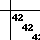

Module pygraphblas.matrix
High level wrapper around GraphBLAS Matrices.
Expand source code
"""High level wrapper around GraphBLAS Matrices.
"""
import sys
import weakref
import operator
from random import randint
from array import array
from .base import (
lib,
ffi,
NULL,
NoValue,
_check,
_error_codes,
_build_range,
_get_select_op,
_get_bin_op,
GxB_INDEX_MAX,
)
from . import types, binaryop, monoid, unaryop, semiring as _semiring
from .vector import Vector
from .scalar import Scalar
from .semiring import Semiring, current_semiring
from .binaryop import BinaryOp, current_accum, current_binop
from .unaryop import UnaryOp
from .monoid import Monoid, current_monoid
from . import descriptor
from .descriptor import Descriptor, Default, TransposeA, current_desc
from .gviz import draw_graph as draw
__all__ = ["Matrix"]
__pdoc__ = {"Matrix.__init__": False}
class Matrix:
"""GraphBLAS Sparse Matrix
This is a high-level wrapper around the GrB_Matrix C type using
the [cffi](https://cffi.readthedocs.io/en/latest/) library.
A Matrix supports many possible operations according to the
GraphBLAS API. Many of those operations have overloaded
operators.
Operator | Description | Default
--- | --- | ---
A @ B | Matrix Matrix Multiplication | type default PLUS_TIMES semiring
v @ A | Vector Matrix Multiplication | type default PLUS_TIMES semiring
A @ v | Matrix Vector Multiplication | type default PLUS_TIMES semiring
A @= B | In-place Matrix Matrix Multiplication | type default PLUS_TIMES semiring
v @= A | In-place Vector Matrix Multiplication | type default PLUS_TIMES semiring
A @= v | In-place Matrix Vector Multiplication | type default PLUS_TIMES semiring
A \\| B | Matrix Union | type default SECOND combiner
A \\|= B | In-place Matrix Union | type default SECOND combiner
A & B | Matrix Intersection | type default SECOND combiner
A &= B | In-place Matrix Intersection | type default SECOND combiner
A + B | Matrix Element-Wise Union | type default PLUS combiner
A += B | In-place Matrix Element-Wise Union | type default PLUS combiner
A - B | Matrix Element-Wise Union | type default MINUS combiner
A -= B | In-place Matrix Element-Wise Union | type default MINUS combiner
A * B | Matrix Element-Wise Intersection | type default TIMES combiner
A *= B | In-place Matrix Element-Wise Intersection | type default TIMES combiner
A / B | Matrix Element-Wise Intersection | type default DIV combiner
A /= B | In-place Matrix Element-Wise Intersection | type default DIV combiner
Note that all the above operator syntax is mearly sugar over
various combinations of calling `Matrix.mxm`, `Matrix.mxv`,
`pygraphblas.vector.Vector.vxm`, `Matrix.eadd`, and `Matrix.emult`.
"""
__slots__ = ("_matrix", "type", "_funcs", "_keep_alives")
def _check(self, res, raise_no_val=False):
if res != lib.GrB_SUCCESS:
if raise_no_val and res == lib.GrB_NO_VALUE:
raise KeyError
error_string = ffi.new("char**")
lib.GrB_Matrix_error(error_string, self._matrix[0])
raise _error_codes[res](ffi.string(error_string[0]))
def __init__(self, matrix, typ=None):
if typ is None:
new_type = ffi.new("GrB_Type*")
self._check(lib.GxB_Matrix_type(new_type, matrix[0]))
typ = types.gb_type_to_type(new_type[0])
self._matrix = matrix
self.type = typ
self._keep_alives = weakref.WeakKeyDictionary()
def __del__(self):
self._check(lib.GrB_Matrix_free(self._matrix))
@classmethod
def sparse(cls, typ, nrows=None, ncols=None):
"""Create an empty sparse Matrix from the given type. The dimensions
can be specified with `nrows` and `ncols`. If no dimensions
are specified, they default to `GxB_INDEX_MAX`.
>>> m = Matrix.sparse(types.UINT8)
>>> m.nrows == lib.GxB_INDEX_MAX
True
>>> m.ncols == lib.GxB_INDEX_MAX
True
>>> m.nvals == 0
True
Optional row and column dimension bounds can be provided to
the method:
>>> m = Matrix.sparse(types.UINT8, 10, 10)
>>> m.nrows == 10
True
>>> m.ncols == 10
True
>>> m.nvals == 0
True
"""
if nrows is None:
nrows = GxB_INDEX_MAX
if ncols is None:
ncols = GxB_INDEX_MAX
new_mat = ffi.new("GrB_Matrix*")
_check(lib.GrB_Matrix_new(new_mat, typ.gb_type, nrows, ncols))
m = cls(new_mat, typ)
return m
@classmethod
def dense(cls, typ, nrows, ncols, fill=None, sparsity_control=None):
"""Return a dense Matrix nrows by ncols.
If `sparsity_control` is provided it is used for the new
matrix (See SuiteSparse User Guide)
>>> m = Matrix.dense(types.UINT8, 3, 3)
>>> m.nrows == 3
True
>>> m.ncols == 3
True
>>> m.nvals == 9
True
>>> for i, j, v in m:
... assert v == 0
If a `fill` value is present, use that, otherwise use the
`zero` attribte of the given type.
>>> m = Matrix.dense(types.UINT8, 3, 3, fill=1)
>>> m.nrows == 3
True
>>> m.ncols == 3
True
>>> m.nvals == 9
True
>>> for i, j, v in m:
... assert v == 1
"""
assert nrows > 0 and ncols > 0, "dense matrix must be at least 1x1"
m = cls.sparse(typ, nrows, ncols)
if sparsity_control is not None:
v.sparsity_control = sparsity_control
if fill is None:
fill = m.type.zero
m[:, :] = fill
return m
@classmethod
def from_lists(cls, I, J, V, nrows=None, ncols=None, typ=None):
"""Create a new matrix from the given lists of row indices, column
indices, and values. If nrows or ncols are not provided, they
are computed from the max values of the provides row and
column indices lists.
>>> M = Matrix.from_lists([1, 2, 3], [2, 3, 1], [42, 314, 1492])
>>> g = draw(M, filename='/docs/imgs/Matrix_from_lists')

"""
assert len(I) == len(J) == len(V)
if not nrows:
nrows = max(I) + 1
if not ncols:
ncols = max(J) + 1
# TODO use ffi and GrB_Matrix_build
if typ is None:
typ = types._gb_from_type(type(V[0]))
m = cls.sparse(typ, nrows, ncols)
for i, j, v in zip(I, J, V):
m[i, j] = v
return m
@classmethod
def from_mm(cls, mm_file, typ):
"""Create a new matrix by reading a Matrix Market file."""
m = ffi.new("GrB_Matrix*")
i = cls(m, typ)
_check(lib.LAGraph_mmread(m, mm_file))
return i
@classmethod
def from_tsv(cls, tsv_file, typ, nrows, ncols):
"""Create a new matrix by reading a tab separated value file."""
m = ffi.new("GrB_Matrix*")
i = cls(m, typ)
_check(lib.LAGraph_tsvread(m, tsv_file, typ.gb_type, nrows, ncols))
return i
@classmethod
def from_binfile(cls, bin_file):
"""Create a new matrix by reading a SuiteSparse specific binary file."""
m = ffi.new("GrB_Matrix*")
_check(lib.LAGraph_binread(m, bin_file))
return cls(m)
@classmethod
def random(
cls,
typ,
nrows,
ncols,
nvals,
make_pattern=False,
make_symmetric=False,
make_skew_symmetric=False,
make_hermitian=True,
no_diagonal=False,
seed=None,
):
"""Create a new random Matrix of the given type, number of rows,
columns and values. Other flags set additional properties the
matrix will hold.
>>> M = Matrix.random(types.UINT8, 5, 5, 20,
... make_symmetric=True, no_diagonal=True, seed=42)
>>> g = draw(M, filename='/docs/imgs/Matrix_random')

"""
result = ffi.new("GrB_Matrix*")
i = cls(result, typ)
fseed = ffi.new("uint64_t*")
if seed is None:
seed = randint(0, sys.maxsize)
fseed[0] = seed
_check(
lib.LAGraph_random(
result,
typ.gb_type,
nrows,
ncols,
nvals,
make_pattern,
make_symmetric,
make_skew_symmetric,
make_hermitian,
no_diagonal,
fseed,
)
)
return i
@classmethod
def identity(cls, typ, nrows, one=None):
"""Return a new square identity Matrix of nrows with diagonal set to
one.
If one is None, use the default typ one value.
>>> M = Matrix.identity(types.UINT8, 3, one=42)
>>> g = draw(M, filename='/docs/imgs/Matrix_identity')

"""
result = cls.sparse(typ, nrows, nrows)
if one is None:
one = result.type.one
for i in range(nrows):
result[i, i] = one
return result
@property
def gb_type(self):
"""Return the GraphBLAS low-level type object of the Matrix. This is
only used if interacting with the low level API.
"""
new_type = ffi.new("GrB_Type*")
self._check(lib.GxB_Matrix_type(new_type, self._matrix[0]))
return new_type[0]
@property
def nrows(self):
"""Return the number of Matrix rows.
>>> M = Matrix.from_lists([0, 1, 2], [1, 2, 0], [42, 314, 1492])
>>> M.nrows
3
"""
n = ffi.new("GrB_Index*")
self._check(lib.GrB_Matrix_nrows(n, self._matrix[0]))
return n[0]
@property
def ncols(self):
"""Return the number of Matrix columns.
>>> M = Matrix.from_lists([0, 1, 2], [1, 2, 0], [42, 314, 1492])
>>> M.ncols
3
"""
n = ffi.new("GrB_Index*")
self._check(lib.GrB_Matrix_ncols(n, self._matrix[0]))
return n[0]
@property
def shape(self):
"""Numpy-like description of matrix shape as 2-tuple (nrows, ncols).
>>> M = Matrix.from_lists([0, 1, 2], [1, 2, 0], [42, 314, 1492])
>>> M.shape
(3, 3)
"""
return (self.nrows, self.ncols)
@property
def square(self):
"""True if Matrix is square, else False."""
return self.nrows == self.ncols
@property
def nvals(self):
"""Return the number of values stored in the Matrix."""
n = ffi.new("GrB_Index*")
self._check(lib.GrB_Matrix_nvals(n, self._matrix[0]))
return n[0]
@property
def T(self):
"""Compute transpose of the Matrix. See `Matrix.transpose`.
Note: This property can be expensive, if you need the
transpose more than once, consider storing this in a local
variable.
"""
return self.transpose()
def dup(self):
"""Create an duplicate Matrix.
>>> A = Matrix.sparse(types.UINT8)
>>> A[1,1] = 42
>>> B = A.dup()
>>> B[1,1]
42
>>> B is not A
True
"""
new_mat = ffi.new("GrB_Matrix*")
self._check(lib.GrB_Matrix_dup(new_mat, self._matrix[0]))
return self.__class__(new_mat, self.type)
@property
def hyper_switch(self):
"""Get the hyper_switch threshold. (See SuiteSparse User Guide)"""
switch = ffi.new("double*")
self._check(
lib.GxB_Matrix_Option_get(self._matrix[0], lib.GxB_HYPER_SWITCH, switch)
)
return switch[0]
@hyper_switch.setter
def hyper_switch(self, switch):
"""Set the hyper_switch threshold. (See SuiteSparse User Guide)"""
switch = ffi.cast("double", switch)
self._check(
lib.GxB_Matrix_Option_set(self._matrix[0], lib.GxB_HYPER_SWITCH, switch)
)
@property
def format(self):
"""Get Matrix format. (See SuiteSparse User Guide)"""
format = ffi.new("GxB_Format_Value*")
self._check(lib.GxB_Matrix_Option_get(self._matrix[0], lib.GxB_FORMAT, format))
return format[0]
@format.setter
def format(self, format):
"""Set Matrix format. (See SuiteSparse User Guide)"""
format = ffi.cast("GxB_Format_Value", format)
self._check(lib.GxB_Matrix_Option_set(self._matrix[0], lib.GxB_FORMAT, format))
@property
def sparsity_control(self):
"""Get Matrix sparsity control. (See SuiteSparse User Guide)"""
sparsity = ffi.new("int*")
self._check(
lib.GxB_Matrix_Option_get(
self._matrix[0], lib.GxB_SPARSITY_CONTROL, sparsity
)
)
return sparsity[0]
@sparsity_control.setter
def sparsity_control(self, sparsity):
"""Set Matrix sparsity control. (See SuiteSparse User Guide)"""
sparsity = ffi.cast("int", sparsity)
self._check(
lib.GxB_Matrix_Option_set(
self._matrix[0], lib.GxB_SPARSITY_CONTROL, sparsity
)
)
@property
def sparsity_status(self):
"""Set Matrix sparsity status. (See SuiteSparse User Guide)"""
status = ffi.new("int*")
self._check(
lib.GxB_Matrix_Option_get(self._matrix[0], lib.GxB_SPARSITY_STATUS, status)
)
return status[0]
def pattern(self, typ=types.BOOL):
"""Return the pattern of the matrix where every present value in this
matrix is set to identity value for the provided type which
defaults to BOOL.
>>> M = Matrix.from_lists([0, 1, 2], [1, 2, 0], [42, 314, 1492])
>>> P = M.pattern()
>>> P.type == types.BOOL
True
>>> P[0,1]
True
"""
r = ffi.new("GrB_Matrix*")
self._check(lib.LAGraph_pattern(r, self._matrix[0], typ.gb_type))
return Matrix(r, typ)
def to_mm(self, fileobj):
"""Write this matrix to a file using the Matrix Market format."""
self._check(lib.LAGraph_mmwrite(self._matrix[0], fileobj))
def to_binfile(self, filename, comments=""):
"""Write this matrix using custom SuiteSparse binary format."""
self._check(
lib.LAGraph_binwrite(self._matrix, filename, bytes(comments, "utf8"))
)
def to_lists(self):
"""Extract the rows, columns and values of the Matrix as 3 lists."""
I = ffi.new("GrB_Index[%s]" % self.nvals)
J = ffi.new("GrB_Index[%s]" % self.nvals)
V = self.type.ffi.new(self.type.C + "[%s]" % self.nvals)
n = ffi.new("GrB_Index*")
n[0] = self.nvals
self._check(self.type.Matrix_extractTuples(I, J, V, n, self._matrix[0]))
return [list(I), list(J), list(map(self.type.to_value, V))]
def clear(self):
"""Clear the matrix. This does not change the size but removes all
values.
>>> M = Matrix.from_lists([0, 1, 2], [1, 2, 0], [42, 314, 1492])
>>> M.nvals == 3
True
>>> M.clear()
>>> M.nvals == 0
True
"""
self._check(lib.GrB_Matrix_clear(self._matrix[0]))
def resize(self, nrows, ncols):
"""Resize the matrix. If the dimensions decrease, entries that fall
outside the resized matrix are deleted.
>>> M = Matrix.from_lists([0, 1, 2], [1, 2, 0], [42, 314, 1492])
>>> M.shape
(3, 3)
>>> M.resize(10, 10)
>>> M.shape
(10, 10)
"""
self._check(lib.GrB_Matrix_resize(self._matrix[0], nrows, ncols))
def transpose(self, cast=None, out=None, mask=None, accum=None, desc=Default):
"""Return Transpose of this matrix.
This function can serve multiple interesting purposes
including typecasting. See the [SuiteSparse User
Guide](https://raw.githubusercontent.com/DrTimothyAldenDavis/GraphBLAS/stable/Doc/GraphBLAS_UserGuide.pdf)
>>> M = Matrix.from_lists([0, 1, 2], [1, 2, 0], [42, 314, 1492])
>>> MT = M.transpose()
>>> MT.to_lists()
[[0, 1, 2], [2, 0, 1], [1492, 42, 314]]
>>> MT = M.transpose(cast=types.BOOL, desc=descriptor.T0)
>>> MT.to_lists()
[[0, 1, 2], [1, 2, 0], [True, True, True]]
"""
if out is None:
new_dimensions = (
(self.nrows, self.ncols)
if TransposeA in desc
else (self.ncols, self.nrows)
)
_out = ffi.new("GrB_Matrix*")
if cast is not None:
typ = cast
else:
typ = self.type
self._check(lib.GrB_Matrix_new(_out, typ.gb_type, *new_dimensions))
out = self.__class__(_out, typ)
mask, accum, desc = self._get_args(mask, accum, desc)
self._check(
lib.GrB_transpose(out._matrix[0], mask, accum, self._matrix[0], desc)
)
return out
def cast(self, cast, out=None):
"""Cast this matrix to the provided type. If out is not provided, a
new matrix is of the cast type is created.
>>> M = Matrix.from_lists([0, 1, 2], [1, 2, 0], [42, 314, 1492])
>>> N = M.cast(types.BOOL)
>>> N.to_lists()
[[0, 1, 2], [1, 2, 0], [True, True, True]]
"""
return self.transpose(cast, out, desc=TransposeA)
def eadd(
self,
other,
add_op=None,
cast=None,
out=None,
mask=None,
accum=None,
desc=Default,
):
"""Element-wise addition with other matrix.
Element-wise addition applies a binary operator element-wise
on two matrices A and B, for all entries that appear in the
set intersection of the patterns of A and B. Other operators
other than addition can be used.
The pattern of the result of the element-wise addition is
the set union of the pattern of A and B. Entries in neither in
A nor in B do not appear in the result.
The only difference between element-wise multiplication and
addition is the pattern of the result, and what happens to
entries outside the intersection. With multiplication the
pattern of T is the intersection; with addition it is the set
union. Entries outside the set intersection are dropped for
multiplication, and kept for addition; in both cases the
operator is only applied to those (and only those) entries in
the intersection. Any binary operator can be used
interchangeably for either operation.
"""
if add_op is None:
add_op = current_binop.get(binaryop.PLUS)
elif isinstance(add_op, str):
add_op = _get_bin_op(add_op, self.type)
add_op = add_op.get_binaryop(self.type, other.type)
mask, accum, desc = self._get_args(mask, accum, desc)
if out is None:
typ = cast or types.promote(self.type, other.type)
_out = ffi.new("GrB_Matrix*")
self._check(lib.GrB_Matrix_new(_out, typ.gb_type, self.nrows, self.ncols))
out = Matrix(_out, typ)
self._check(
lib.GrB_Matrix_eWiseAdd_BinaryOp(
out._matrix[0],
mask,
accum,
add_op,
self._matrix[0],
other._matrix[0],
desc,
)
)
return out
def emult(
self,
other,
mult_op=None,
cast=None,
out=None,
mask=None,
accum=None,
desc=Default,
):
"""Element-wise multiplication with other matrix.
Element-wise multiplication applies a binary operator
element-wise on two matrices A and B, for all entries that
appear in the set intersection of the patterns of A and B.
Other operators other than addition can be used.
The pattern of the result of the element-wise multiplication
is exactly this set intersection. Entries in A but not B, or
visa versa, do not appear in the result.
The only difference between element-wise multiplication and
addition is the pattern of the result, and what happens to
entries outside the intersection. With multiplication the
pattern of T is the intersection; with addition it is the set
union. Entries outside the set intersection are dropped for
multiplication, and kept for addition; in both cases the
operator is only applied to those (and only those) entries in
the intersection. Any binary operator can be used
interchangeably for either operation.
"""
if mult_op is None:
mult_op = current_binop.get(binaryop.TIMES)
elif isinstance(mult_op, str):
mult_op = _get_bin_op(mult_op, self.type)
mult_op = mult_op.get_binaryop(self.type, other.type)
mask, accum, desc = self._get_args(mask, accum, desc)
if out is None:
typ = cast or types.promote(self.type, other.type)
_out = ffi.new("GrB_Matrix*")
self._check(lib.GrB_Matrix_new(_out, typ.gb_type, self.nrows, self.ncols))
out = Matrix(_out, typ)
self._check(
lib.GrB_Matrix_eWiseMult_BinaryOp(
out._matrix[0],
mask,
accum,
mult_op,
self._matrix[0],
other._matrix[0],
desc,
)
)
return out
def iseq(self, other):
"""Compare two matrices for equality returning True or False.
Not to be confused with `==` which will return a matrix of
BOOL values comparing *elements* for equality.
Uses code from LAGraph_isequal.
>>> M = Matrix.from_lists([0, 1, 2], [1, 2, 0], [42, 314, 1492])
>>> N = M.dup()
>>> M.iseq(N)
True
>>> del N[0, 1]
>>> M.iseq(N)
False
"""
result = ffi.new("_Bool*")
eq_op = self.type.EQ.get_binaryop(self.type, other.type)
self._check(
lib.LAGraph_isequal(result, self._matrix[0], other._matrix[0], eq_op)
)
return result[0]
def isne(self, other):
"""Compare two matrices for inequality. See `Matrix.iseq`."""
return not self.iseq(other)
def __iter__(self):
"""Iterate over the (row, col, value) triples of the Matrix.
>>> M = Matrix.from_lists([0, 1, 2], [1, 2, 0], [42, 314, 1492])
>>> sorted(list(iter(M)))
[(0, 1, 42), (1, 2, 314), (2, 0, 1492)]
"""
nvals = self.nvals
_nvals = ffi.new("GrB_Index[1]", [nvals])
I = ffi.new("GrB_Index[%s]" % nvals)
J = ffi.new("GrB_Index[%s]" % nvals)
X = self.type.ffi.new("%s[%s]" % (self.type.C, nvals))
self._check(self.type.Matrix_extractTuples(I, J, X, _nvals, self._matrix[0]))
return zip(I, J, map(self.type.to_value, X))
def to_arrays(self):
"""Convert Matrix to tuple of three dense array objects.
>>> M = Matrix.from_lists([0, 1, 2], [1, 2, 0], [42, 314, 1492])
>>> M.to_arrays()
(array('L', [0, 1, 2]), array('L', [1, 2, 0]), array('q', [42, 314, 1492]))
"""
if self.type.typecode is None:
raise TypeError("This matrix has no array typecode.")
nvals = self.nvals
_nvals = ffi.new("GrB_Index[1]", [nvals])
I = ffi.new("GrB_Index[%s]" % nvals)
J = ffi.new("GrB_Index[%s]" % nvals)
X = self.type.ffi.new("%s[%s]" % (self.type.C, nvals))
self._check(self.type.Matrix_extractTuples(I, J, X, _nvals, self._matrix[0]))
return array("L", I), array("L", J), array(self.type.typecode, X)
@property
def rows(self):
"""An iterator of row indexes present in the matrix.
>>> M = Matrix.from_lists([0, 1, 2], [1, 2, 0], [42, 314, 1492])
>>> list(M.rows)
[0, 1, 2]
"""
nvals = self.nvals
_nvals = ffi.new("GrB_Index[1]", [nvals])
I = ffi.new("GrB_Index[%s]" % nvals)
J = NULL
X = NULL
self._check(self.type.Matrix_extractTuples(I, J, X, _nvals, self._matrix[0]))
return iter(I)
@property
def cols(self):
"""An iterator of column indexes present in the matrix.
>>> M = Matrix.from_lists([0, 1, 2], [1, 2, 0], [42, 314, 1492])
>>> list(M.cols)
[1, 2, 0]
"""
nvals = self.nvals
_nvals = ffi.new("GrB_Index[1]", [nvals])
I = NULL
J = ffi.new("GrB_Index[%s]" % nvals)
X = NULL
self._check(self.type.Matrix_extractTuples(I, J, X, _nvals, self._matrix[0]))
return iter(J)
@property
def vals(self):
"""An iterator of values present in the matrix.
>>> M = Matrix.from_lists([0, 1, 2], [1, 2, 0], [42, 314, 1492])
>>> list(M.vals)
[42, 314, 1492]
"""
nvals = self.nvals
_nvals = ffi.new("GrB_Index[1]", [nvals])
I = NULL
J = NULL
X = self.type.ffi.new("%s[%s]" % (self.type.C, nvals))
self._check(self.type.Matrix_extractTuples(I, J, X, _nvals, self._matrix[0]))
return iter(X)
def __len__(self):
"""Return the number of elements in the Matrix.
>>> M = Matrix.from_lists([0, 1, 2], [1, 2, 0], [42, 314, 1492])
>>> len(M)
3
"""
return self.nvals
def __and__(self, other):
return self.emult(other, self.type.SECOND)
def __iand__(self, other):
return self.emult(other, self.type.SECOND, out=self)
def __or__(self, other):
return self.eadd(other, self.type.SECOND)
def __ior__(self, other):
return self.eadd(other, self.type.SECOND, out=self)
def __add__(self, other):
if not isinstance(other, Matrix):
return self.apply_second(self.type.PLUS, other)
return self.eadd(other)
def __radd__(self, other):
if not isinstance(other, Matrix):
return self.apply_first(other, self.type.PLUS)
return other.eadd(self)
def __iadd__(self, other):
if not isinstance(other, Matrix):
return self.apply_second(self.type.PLUS, other, out=self)
return self.eadd(other, out=self)
def __sub__(self, other):
if not isinstance(other, Matrix):
return self.apply_second(self.type.MINUS, other)
return self.eadd(other, add_op=self.type.MINUS)
def __rsub__(self, other):
if not isinstance(other, Matrix):
return self.apply_first(other, self.type.MINUS)
return other.eadd(self, add_op=self.type.MINUS)
def __isub__(self, other):
if not isinstance(other, Matrix):
return self.apply_second(self.type.MINUS, other, out=self)
return other.eadd(self, out=self, add_op=self.type.MINUS)
def __mul__(self, other):
if not isinstance(other, Matrix):
return self.apply_second(self.type.TIMES, other)
return self.eadd(other, add_op=self.type.TIMES)
def __rmul__(self, other):
if not isinstance(other, Matrix):
return self.apply_first(other, self.type.TIMES)
return other.eadd(self, add_op=self.type.TIMES)
def __imul__(self, other):
if not isinstance(other, Matrix):
return self.apply_second(self.type.TIMES, other)
return other.eadd(self, out=self, add_op=self.type.TIMES)
def __truediv__(self, other):
if not isinstance(other, Matrix):
return self.apply_second(self.type.DIV, other)
return self.eadd(other, add_op=self.type.DIV)
def __rtruediv__(self, other):
if not isinstance(other, Matrix):
return self.apply_first(other, self.type.DIV)
return other.eadd(self, add_op=self.type.DIV)
def __itruediv__(self, other):
if not isinstance(other, Matrix):
return self.apply_second(self.type.DIV, other)
return other.eadd(self, out=self, add_op=self.type.DIV)
def __invert__(self):
return self.apply(unaryop.MINV)
def __neg__(self):
return self.apply(unaryop.AINV)
def __abs__(self):
return self.apply(unaryop.ABS)
def __pow__(self, exponent):
if exponent == 0:
return self.__class__.identity(self.type, self.nrows)
if exponent == 1:
return self
result = self.dup()
for i in range(1, exponent):
result.mxm(self, out=result)
return result
def reduce_bool(self, mon=None, mask=None, accum=None, desc=Default):
"""Reduce matrix to a boolean."""
if mon is None:
mon = current_monoid.get(types.BOOL.LOR_MONOID)
mon = mon.get_monoid(self.type)
result = ffi.new("_Bool*")
mask, accum, desc = self._get_args(mask, accum, desc)
self._check(
lib.GrB_Matrix_reduce_BOOL(result, accum, mon, self._matrix[0], desc)
)
return result[0]
def reduce_int(self, mon=None, mask=None, accum=None, desc=Default):
"""Reduce matrix to an integer."""
if mon is None:
mon = current_monoid.get(types.INT64.PLUS_MONOID)
mon = mon.get_monoid(self.type)
result = ffi.new("int64_t*")
mask, accum, desc = self._get_args(mask, accum, desc)
self._check(
lib.GrB_Matrix_reduce_INT64(result, accum, mon, self._matrix[0], desc)
)
return result[0]
def reduce_float(self, mon=None, mask=None, accum=None, desc=Default):
"""Reduce matrix to an float."""
if mon is None:
mon = current_monoid.get(self.type.PLUS_MONOID)
mon = mon.get_monoid(self.type)
mask, accum, desc = self._get_args(mask, accum, desc)
result = ffi.new("double*")
self._check(
lib.GrB_Matrix_reduce_FP64(result, accum, mon, self._matrix[0], desc)
)
return result[0]
def reduce_vector(self, mon=None, out=None, mask=None, accum=None, desc=Default):
"""Reduce matrix to a vector."""
if mon is None:
mon = current_monoid.get(getattr(self.type, "PLUS_MONOID", NULL))
mon = mon.get_monoid(self.type)
if out is None:
out = Vector.sparse(self.type, self.nrows)
mask, accum, desc = self._get_args(mask, accum, desc)
self._check(
lib.GrB_Matrix_reduce_Monoid(
out._vector[0], mask, accum, mon, self._matrix[0], desc
)
)
return out
def apply(self, op, out=None, mask=None, accum=None, desc=Default):
"""Apply Unary op to matrix elements."""
if out is None:
out = self.__class__.sparse(self.type, self.nrows, self.ncols)
if isinstance(op, UnaryOp):
op = op.get_unaryop(self.type)
mask, accum, desc = self._get_args(mask, accum, desc)
self._check(
lib.GrB_Matrix_apply(out._matrix[0], mask, accum, op, self._matrix[0], desc)
)
return out
def apply_first(self, first, op, out=None, mask=None, accum=None, desc=Default):
"""Apply a binary operator to the entries in a matrix, binding the
first input to a scalar first.
"""
if out is None:
out = self.__class__.sparse(self.type, self.nrows, self.ncols)
if isinstance(op, BinaryOp):
op = op.get_binaryop(self.type)
mask, accum, desc = self._get_args(mask, accum, desc)
if isinstance(first, Scalar):
f = lib.GxB_Matrix_apply_BinaryOp1st
else:
f = self.type.Matrix_apply_BinaryOp1st
self._check(f(out._matrix[0], mask, accum, op, first, self._matrix[0], desc))
return out
def apply_second(self, op, second, out=None, mask=None, accum=None, desc=Default):
"""Apply a binary operator to the entries in a matrix, binding the
second input to a scalar second.
"""
if out is None:
out = self.__class__.sparse(self.type, self.nrows, self.ncols)
if isinstance(op, BinaryOp):
op = op.get_binaryop(self.type)
mask, accum, desc = self._get_args(mask, accum, desc)
self._check(
self.type.Matrix_apply_BinaryOp2nd(
out._matrix[0], mask, accum, op, self._matrix[0], second, desc
)
)
return out
def select(self, op, thunk=None, out=None, mask=None, accum=None, desc=Default):
"""Select elements that match the given select operation condition.
Can be a string mapping to following operators:
">": lib.GxB_GT_THUNK
"<": lib.GxB_LT_THUNK
">=": lib.GxB_GE_THUNK
"<=": lib.GxB_LE_THUNK
"!=": lib.GxB_NE_THUNK
"==": lib.GxB_EQ_THUNK
">0": lib.GxB_GT_ZERO
"<0": lib.GxB_LT_ZERO
">=0": lib.GxB_GE_ZERO
"<=0": lib.GxB_LE_ZERO
"!=0": lib.GxB_NONZERO
"==0": lib.GxB_EQ_ZERO
"""
if out is None:
out = self.__class__.sparse(self.type, self.nrows, self.ncols)
if isinstance(op, str):
op = _get_select_op(op)
if thunk is None:
thunk = NULL
if isinstance(thunk, (bool, int, float, complex)):
thunk = Scalar.from_value(thunk)
if isinstance(thunk, Scalar):
self._keep_alives[self._matrix] = thunk
thunk = thunk.scalar[0]
mask, accum, desc = self._get_args(mask, accum, desc)
self._check(
lib.GxB_Matrix_select(
out._matrix[0], mask, accum, op, self._matrix[0], thunk, desc
)
)
return out
def tril(self, thunk=None):
"""Select the lower triangular Matrix."""
return self.select(lib.GxB_TRIL, thunk=thunk)
def triu(self, thunk=None):
"""Select the upper triangular Matrix."""
return self.select(lib.GxB_TRIU, thunk=thunk)
def diag(self, thunk=None):
"""Select the diagonal Matrix."""
return self.select(lib.GxB_DIAG, thunk=thunk)
def offdiag(self, thunk=None):
"""Select the off-diagonal Matrix."""
return self.select(lib.GxB_OFFDIAG, thunk=thunk)
def nonzero(self):
"""Select the non-zero Matrix."""
return self.select(lib.GxB_NONZERO)
def _full(self, identity=None):
""""""
B = self.__class__.sparse(self.type, self.nrows, self.ncols)
if identity is None:
identity = self.type.one
self._check(
self.type.Matrix_assignScalar(
B._matrix[0], NULL, NULL, identity, lib.GrB_ALL, 0, lib.GrB_ALL, 0, NULL
)
)
return self.eadd(B, self.type.FIRST)
def _compare(self, other, op, strop):
C = self.__class__.sparse(types.BOOL, self.nrows, self.ncols)
if isinstance(other, (bool, int, float, complex)):
if op(other, 0):
B = self.__class__.dup(self)
B[:, :] = other
self.emult(B, strop, out=C)
return C
else:
self.select(strop, other).apply(types.BOOL.ONE, out=C)
return C
elif isinstance(other, Matrix):
A = self._full()
B = other._full()
A.emult(B, strop, out=C)
return C
else:
raise TypeError("Unknown matrix comparison type.")
def __gt__(self, other):
return self._compare(other, operator.gt, ">")
def __lt__(self, other):
return self._compare(other, operator.lt, "<")
def __ge__(self, other):
return self._compare(other, operator.ge, ">=")
def __le__(self, other):
return self._compare(other, operator.le, "<=")
def __eq__(self, other):
return self._compare(other, operator.eq, "==")
def __ne__(self, other):
return self._compare(other, operator.ne, "!=")
def _get_args(self, mask=None, accum=None, desc=Default):
if isinstance(mask, Matrix):
mask = mask._matrix[0]
elif isinstance(mask, Vector):
mask = mask._vector[0]
else:
mask = NULL
if accum is None:
accum = current_accum.get(NULL)
if isinstance(accum, BinaryOp):
accum = accum.get_binaryop(self.type)
if desc is None or desc == Default:
desc = current_desc.get(Default)
if isinstance(desc, Descriptor):
desc = desc.desc[0]
return mask, accum, desc
def mxm(
self,
other,
cast=None,
out=None,
semiring=None,
mask=None,
accum=None,
desc=Default,
):
"""Matrix-matrix multiply."""
if semiring is None:
semiring = current_semiring.get(None)
typ = cast or types.promote(self.type, other.type, semiring)
if out is None:
out = self.__class__.sparse(typ, self.nrows, other.ncols)
if semiring is None:
semiring = typ.PLUS_TIMES
mask, accum, desc = self._get_args(mask, accum, desc)
self._check(
lib.GrB_mxm(
out._matrix[0],
mask,
accum,
semiring.get_semiring(typ),
self._matrix[0],
other._matrix[0],
desc,
)
)
return out
def mxv(
self,
other,
cast=None,
out=None,
semiring=None,
mask=None,
accum=None,
desc=Default,
):
"""Matrix-vector multiply."""
if semiring is None:
semiring = current_semiring.get(None)
typ = cast or types.promote(self.type, other.type, semiring)
if out is None:
new_dimension = self.ncols if TransposeA in desc else self.nrows
out = Vector.sparse(typ, new_dimension)
mask, accum, desc = self._get_args(mask, accum, desc)
if semiring is None:
semiring = typ.PLUS_TIMES
self._check(
lib.GrB_mxv(
out._vector[0],
mask,
accum,
semiring.get_semiring(typ),
self._matrix[0],
other._vector[0],
desc,
)
)
return out
def __matmul__(self, other):
if isinstance(other, Matrix):
return self.mxm(other)
elif isinstance(other, Vector):
return self.mxv(other)
else:
raise TypeError("Right argument to @ must be Matrix or Vector.")
def __imatmul__(self, other):
return self.mxm(other, out=self)
def kronecker(
self, other, op=None, cast=None, out=None, mask=None, accum=None, desc=Default
):
"""Kronecker product."""
mask, accum, desc = self._get_args(mask, accum, desc)
typ = cast or types.promote(self.type, other.type)
if out is None:
out = self.__class__.sparse(
typ, self.nrows * other.nrows, self.ncols * other.ncols
)
if op is None:
op = typ.TIMES
if isinstance(op, BinaryOp):
op = op.get_binaryop(self.type, other.type)
self._check(
lib.GrB_Matrix_kronecker_BinaryOp(
out._matrix[0], mask, accum, op, self._matrix[0], other._matrix[0], desc
)
)
return out
def extract_matrix(
self, rindex=None, cindex=None, out=None, mask=None, accum=None, desc=Default
):
"""Extract a submatrix."""
ta = TransposeA in desc
mask, accum, desc = self._get_args(mask, accum, desc)
result_nrows = self.ncols if ta else self.nrows
result_ncols = self.nrows if ta else self.ncols
I, ni, isize = _build_range(rindex, result_nrows - 1)
J, nj, jsize = _build_range(cindex, result_ncols - 1)
if isize is None:
isize = result_nrows
if jsize is None:
jsize = result_ncols
if out is None:
out = self.__class__.sparse(self.type, isize, jsize)
self._check(
lib.GrB_Matrix_extract(
out._matrix[0], mask, accum, self._matrix[0], I, ni, J, nj, desc
)
)
return out
def extract_col(
self, col_index, row_slice=None, out=None, mask=None, accum=None, desc=Default
):
"""Extract a column Vector."""
stop_val = self.ncols if TransposeA in desc else self.nrows
if out is None:
out = Vector.sparse(self.type, stop_val)
mask, accum, desc = self._get_args(mask, accum, desc)
I, ni, size = _build_range(row_slice, stop_val)
self._check(
lib.GrB_Col_extract(
out._vector[0], mask, accum, self._matrix[0], I, ni, col_index, desc
)
)
return out
def extract_row(
self, row_index, col_slice=None, out=None, mask=None, accum=None, desc=Default
):
"""Extract a row Vector."""
desc = desc | TransposeA
return self.extract_col(
row_index, col_slice, out, desc=desc, mask=None, accum=None
)
def __getitem__(self, index):
if isinstance(index, int):
# a[3] extract single row
return self.extract_row(index, None)
if isinstance(index, slice):
# a[3:] extract submatrix of rows
return self.extract_matrix(index, None)
if isinstance(index, Matrix):
return self.extract_matrix(mask=index)
if not isinstance(index, (tuple, list)):
raise TypeError
i0 = index[0]
i1 = index[1]
if isinstance(i0, int) and isinstance(i1, int):
# a[3,3] extract single element
result = self.type.ffi.new(self.type.ptr)
self._check(
self.type.Matrix_extractElement(
result, self._matrix[0], index[0], index[1]
)
)
return self.type.to_value(result[0])
if isinstance(i0, int) and isinstance(i1, slice):
# a[3,:] extract slice of row vector
return self.extract_row(i0, i1)
if isinstance(i0, slice) and isinstance(i1, int):
# a[:,3] extract slice of col vector
return self.extract_col(i1, i0)
# a[:,:] or a[[0,1,2], [3,4,5]] extract submatrix with slice or row/col indices
return self.extract_matrix(i0, i1)
def assign_col(
self, col_index, value, row_slice=None, mask=None, accum=None, desc=Default
):
"""Assign a vector to a column."""
stop_val = self.ncols if TransposeA in desc else self.nrows
I, ni, size = _build_range(row_slice, stop_val)
mask, accum, desc = self._get_args(mask, accum, desc)
self._check(
lib.GrB_Col_assign(
self._matrix[0], mask, accum, value._vector[0], I, ni, col_index, desc
)
)
def assign_row(
self, row_index, value, col_slice=None, mask=None, accum=None, desc=Default
):
"""Assign a vector to a row."""
stop_val = self.nrows if TransposeA in desc else self.ncols
I, ni, size = _build_range(col_slice, stop_val)
mask, accum, desc = self._get_args(mask, accum, desc)
self._check(
lib.GrB_Row_assign(
self._matrix[0], mask, accum, value._vector[0], row_index, I, ni, desc
)
)
def assign_matrix(
self, value, rindex=None, cindex=None, mask=None, accum=None, desc=Default
):
"""Assign a submatrix."""
I, ni, isize = _build_range(rindex, self.nrows - 1)
J, nj, jsize = _build_range(cindex, self.ncols - 1)
if isize is None:
isize = self.nrows
if jsize is None:
jsize = self.ncols
mask, accum, desc = self._get_args(mask, accum, desc)
self._check(
lib.GrB_Matrix_assign(
self._matrix[0], mask, accum, value._matrix[0], I, ni, J, nj, desc
)
)
def assign_scalar(
self, value, row_slice=None, col_slice=None, mask=None, accum=None, desc=Default
):
"""Assign a scalar to the Matrix."""
mask, accum, desc = self._get_args(mask, accum, desc)
if row_slice:
I, ni, isize = _build_range(row_slice, self.nrows - 1)
else:
I = lib.GrB_ALL
ni = 0
if col_slice:
J, nj, jsize = _build_range(col_slice, self.ncols - 1)
else:
J = lib.GrB_ALL
nj = 0
scalar_type = types._gb_from_type(type(value))
self._check(
scalar_type.Matrix_assignScalar(
self._matrix[0], mask, accum, value, I, ni, J, nj, desc
)
)
def __setitem__(self, index, value):
if isinstance(index, int):
# A[3] = assign single row vector
if isinstance(value, Vector):
return self.assign_row(index, value)
if isinstance(index, slice):
# A[3:] = assign submatrix to rows
if isinstance(value, Matrix):
self.assign_matrix(value, index, None)
return
if isinstance(value, (bool, int, float, complex)):
self.assign_scalar(value, index, None)
return
if isinstance(index, Matrix):
if isinstance(value, Matrix):
# A[M] = B masked matrix assignment
raise NotImplementedError
if not isinstance(value, (bool, int, float, complex)):
raise TypeError
# A[M] = s masked scalar assignment
self.assign_scalar(value, mask=index)
return
if not isinstance(index, (tuple, list)):
raise TypeError
i0 = index[0]
i1 = index[1]
if isinstance(i0, int) and isinstance(i1, int):
val = self.type.from_value(value)
self._check(self.type.Matrix_setElement(self._matrix[0], val, i0, i1))
return
if isinstance(i0, int) and isinstance(i1, slice):
# a[3,:] assign slice of row vector or scalar
self.assign_row(i0, value, i1)
return
if isinstance(i0, slice) and isinstance(i1, int):
# a[:,3] extract slice of col vector or scalar
self.assign_col(i1, value, i0)
return
if isinstance(i0, slice) and isinstance(i1, slice):
if isinstance(value, (bool, int, float, complex)):
self.assign_scalar(value, i0, i1)
return
# a[:,:] assign submatrix
self.assign_matrix(value, i0, i1)
return
def __delitem__(self, index):
if (
not isinstance(index, tuple)
or not isinstance(index[0], int)
or not isinstance(index[1], int)
):
raise TypeError(
"__delitem__ currently only supports single element removal"
)
self._check(lib.GrB_Matrix_removeElement(self._matrix[0], index[0], index[1]))
def __contains__(self, index):
try:
v = self[index]
return True
except NoValue:
return False
def get(self, i, j, default=None):
"""Get the element at row `i` col `j` or return the default value if
the element is not present.
"""
try:
return self[i, j]
except NoValue:
return default
def wait(self):
"""Wait for this Matrix to complete before allowing another thread to
change it.
"""
self._check(lib.GrB_Matrix_wait(self._matrix))
def to_string(self, format_string="{:>%s}", width=3, empty_char=""):
"""Return a string representation of the Matrix."""
format_string = format_string % width
header = (
format_string.format("")
+ " "
+ "".join(format_string.format(i) for i in range(self.ncols))
)
result = header + "\n"
for row in range(self.nrows):
result += format_string.format(row) + "|"
for col in range(self.ncols):
value = self.get(row, col, empty_char)
result += self.type.format_value(value, width)
result += "|" + format_string.format(row) + "\n"
result += header
return result
def __str__(self):
return self.to_string()
def __repr__(self):
return "<Matrix (%sx%s : %s:%s)>" % (
self.nrows,
self.ncols,
self.nvals,
self.type.__name__,
)
def to_scipy_sparse(self, format="csr"):
"""Return a scipy sparse matrix of this Matrix."""
from scipy import sparse
rows, cols, vals = self.to_arrays()
s = sparse.coo_matrix((vals, (rows, cols)), shape=self.shape)
if format == "coo":
return s
if format not in {"bsr", "csr", "csc", "coo", "lil", "dia", "dok"}:
raise Exception(f"Invalid format: {format}")
return s.asformat(format)
def to_numpy(self):
"""Return a dense numpy matrix of this Matrix."""
s = self.to_scipy_sparse("coo")
return s.toarray()Types
class Matrix-
GraphBLAS Sparse Matrix
This is a high-level wrapper around the GrB_Matrix C type using the cffi library.
A Matrix supports many possible operations according to the GraphBLAS API. Many of those operations have overloaded operators.
Operator Description Default A @ B Matrix Matrix Multiplication type default PLUS_TIMES semiring v @ A Vector Matrix Multiplication type default PLUS_TIMES semiring A @ v Matrix Vector Multiplication type default PLUS_TIMES semiring A @= B In-place Matrix Matrix Multiplication type default PLUS_TIMES semiring v @= A In-place Vector Matrix Multiplication type default PLUS_TIMES semiring A @= v In-place Matrix Vector Multiplication type default PLUS_TIMES semiring A | B Matrix Union type default SECOND combiner A |= B In-place Matrix Union type default SECOND combiner A & B Matrix Intersection type default SECOND combiner A &= B In-place Matrix Intersection type default SECOND combiner A + B Matrix Element-Wise Union type default PLUS combiner A += B In-place Matrix Element-Wise Union type default PLUS combiner A - B Matrix Element-Wise Union type default MINUS combiner A -= B In-place Matrix Element-Wise Union type default MINUS combiner A * B Matrix Element-Wise Intersection type default TIMES combiner A *= B In-place Matrix Element-Wise Intersection type default TIMES combiner A / B Matrix Element-Wise Intersection type default DIV combiner A /= B In-place Matrix Element-Wise Intersection type default DIV combiner Note that all the above operator syntax is mearly sugar over various combinations of calling
Matrix.mxm(),Matrix.mxv(),Vector.vxm(),Matrix.eadd(), andMatrix.emult().Expand source code
class Matrix: """GraphBLAS Sparse Matrix This is a high-level wrapper around the GrB_Matrix C type using the [cffi](https://cffi.readthedocs.io/en/latest/) library. A Matrix supports many possible operations according to the GraphBLAS API. Many of those operations have overloaded operators. Operator | Description | Default --- | --- | --- A @ B | Matrix Matrix Multiplication | type default PLUS_TIMES semiring v @ A | Vector Matrix Multiplication | type default PLUS_TIMES semiring A @ v | Matrix Vector Multiplication | type default PLUS_TIMES semiring A @= B | In-place Matrix Matrix Multiplication | type default PLUS_TIMES semiring v @= A | In-place Vector Matrix Multiplication | type default PLUS_TIMES semiring A @= v | In-place Matrix Vector Multiplication | type default PLUS_TIMES semiring A \\| B | Matrix Union | type default SECOND combiner A \\|= B | In-place Matrix Union | type default SECOND combiner A & B | Matrix Intersection | type default SECOND combiner A &= B | In-place Matrix Intersection | type default SECOND combiner A + B | Matrix Element-Wise Union | type default PLUS combiner A += B | In-place Matrix Element-Wise Union | type default PLUS combiner A - B | Matrix Element-Wise Union | type default MINUS combiner A -= B | In-place Matrix Element-Wise Union | type default MINUS combiner A * B | Matrix Element-Wise Intersection | type default TIMES combiner A *= B | In-place Matrix Element-Wise Intersection | type default TIMES combiner A / B | Matrix Element-Wise Intersection | type default DIV combiner A /= B | In-place Matrix Element-Wise Intersection | type default DIV combiner Note that all the above operator syntax is mearly sugar over various combinations of calling `Matrix.mxm`, `Matrix.mxv`, `pygraphblas.vector.Vector.vxm`, `Matrix.eadd`, and `Matrix.emult`. """ __slots__ = ("_matrix", "type", "_funcs", "_keep_alives") def _check(self, res, raise_no_val=False): if res != lib.GrB_SUCCESS: if raise_no_val and res == lib.GrB_NO_VALUE: raise KeyError error_string = ffi.new("char**") lib.GrB_Matrix_error(error_string, self._matrix[0]) raise _error_codes[res](ffi.string(error_string[0])) def __init__(self, matrix, typ=None): if typ is None: new_type = ffi.new("GrB_Type*") self._check(lib.GxB_Matrix_type(new_type, matrix[0])) typ = types.gb_type_to_type(new_type[0]) self._matrix = matrix self.type = typ self._keep_alives = weakref.WeakKeyDictionary() def __del__(self): self._check(lib.GrB_Matrix_free(self._matrix)) @classmethod def sparse(cls, typ, nrows=None, ncols=None): """Create an empty sparse Matrix from the given type. The dimensions can be specified with `nrows` and `ncols`. If no dimensions are specified, they default to `GxB_INDEX_MAX`. >>> m = Matrix.sparse(types.UINT8) >>> m.nrows == lib.GxB_INDEX_MAX True >>> m.ncols == lib.GxB_INDEX_MAX True >>> m.nvals == 0 True Optional row and column dimension bounds can be provided to the method: >>> m = Matrix.sparse(types.UINT8, 10, 10) >>> m.nrows == 10 True >>> m.ncols == 10 True >>> m.nvals == 0 True """ if nrows is None: nrows = GxB_INDEX_MAX if ncols is None: ncols = GxB_INDEX_MAX new_mat = ffi.new("GrB_Matrix*") _check(lib.GrB_Matrix_new(new_mat, typ.gb_type, nrows, ncols)) m = cls(new_mat, typ) return m @classmethod def dense(cls, typ, nrows, ncols, fill=None, sparsity_control=None): """Return a dense Matrix nrows by ncols. If `sparsity_control` is provided it is used for the new matrix (See SuiteSparse User Guide) >>> m = Matrix.dense(types.UINT8, 3, 3) >>> m.nrows == 3 True >>> m.ncols == 3 True >>> m.nvals == 9 True >>> for i, j, v in m: ... assert v == 0 If a `fill` value is present, use that, otherwise use the `zero` attribte of the given type. >>> m = Matrix.dense(types.UINT8, 3, 3, fill=1) >>> m.nrows == 3 True >>> m.ncols == 3 True >>> m.nvals == 9 True >>> for i, j, v in m: ... assert v == 1 """ assert nrows > 0 and ncols > 0, "dense matrix must be at least 1x1" m = cls.sparse(typ, nrows, ncols) if sparsity_control is not None: v.sparsity_control = sparsity_control if fill is None: fill = m.type.zero m[:, :] = fill return m @classmethod def from_lists(cls, I, J, V, nrows=None, ncols=None, typ=None): """Create a new matrix from the given lists of row indices, column indices, and values. If nrows or ncols are not provided, they are computed from the max values of the provides row and column indices lists. >>> M = Matrix.from_lists([1, 2, 3], [2, 3, 1], [42, 314, 1492]) >>> g = draw(M, filename='/docs/imgs/Matrix_from_lists')  """ assert len(I) == len(J) == len(V) if not nrows: nrows = max(I) + 1 if not ncols: ncols = max(J) + 1 # TODO use ffi and GrB_Matrix_build if typ is None: typ = types._gb_from_type(type(V[0])) m = cls.sparse(typ, nrows, ncols) for i, j, v in zip(I, J, V): m[i, j] = v return m @classmethod def from_mm(cls, mm_file, typ): """Create a new matrix by reading a Matrix Market file.""" m = ffi.new("GrB_Matrix*") i = cls(m, typ) _check(lib.LAGraph_mmread(m, mm_file)) return i @classmethod def from_tsv(cls, tsv_file, typ, nrows, ncols): """Create a new matrix by reading a tab separated value file.""" m = ffi.new("GrB_Matrix*") i = cls(m, typ) _check(lib.LAGraph_tsvread(m, tsv_file, typ.gb_type, nrows, ncols)) return i @classmethod def from_binfile(cls, bin_file): """Create a new matrix by reading a SuiteSparse specific binary file.""" m = ffi.new("GrB_Matrix*") _check(lib.LAGraph_binread(m, bin_file)) return cls(m) @classmethod def random( cls, typ, nrows, ncols, nvals, make_pattern=False, make_symmetric=False, make_skew_symmetric=False, make_hermitian=True, no_diagonal=False, seed=None, ): """Create a new random Matrix of the given type, number of rows, columns and values. Other flags set additional properties the matrix will hold. >>> M = Matrix.random(types.UINT8, 5, 5, 20, ... make_symmetric=True, no_diagonal=True, seed=42) >>> g = draw(M, filename='/docs/imgs/Matrix_random')  """ result = ffi.new("GrB_Matrix*") i = cls(result, typ) fseed = ffi.new("uint64_t*") if seed is None: seed = randint(0, sys.maxsize) fseed[0] = seed _check( lib.LAGraph_random( result, typ.gb_type, nrows, ncols, nvals, make_pattern, make_symmetric, make_skew_symmetric, make_hermitian, no_diagonal, fseed, ) ) return i @classmethod def identity(cls, typ, nrows, one=None): """Return a new square identity Matrix of nrows with diagonal set to one. If one is None, use the default typ one value. >>> M = Matrix.identity(types.UINT8, 3, one=42) >>> g = draw(M, filename='/docs/imgs/Matrix_identity')  """ result = cls.sparse(typ, nrows, nrows) if one is None: one = result.type.one for i in range(nrows): result[i, i] = one return result @property def gb_type(self): """Return the GraphBLAS low-level type object of the Matrix. This is only used if interacting with the low level API. """ new_type = ffi.new("GrB_Type*") self._check(lib.GxB_Matrix_type(new_type, self._matrix[0])) return new_type[0] @property def nrows(self): """Return the number of Matrix rows. >>> M = Matrix.from_lists([0, 1, 2], [1, 2, 0], [42, 314, 1492]) >>> M.nrows 3 """ n = ffi.new("GrB_Index*") self._check(lib.GrB_Matrix_nrows(n, self._matrix[0])) return n[0] @property def ncols(self): """Return the number of Matrix columns. >>> M = Matrix.from_lists([0, 1, 2], [1, 2, 0], [42, 314, 1492]) >>> M.ncols 3 """ n = ffi.new("GrB_Index*") self._check(lib.GrB_Matrix_ncols(n, self._matrix[0])) return n[0] @property def shape(self): """Numpy-like description of matrix shape as 2-tuple (nrows, ncols). >>> M = Matrix.from_lists([0, 1, 2], [1, 2, 0], [42, 314, 1492]) >>> M.shape (3, 3) """ return (self.nrows, self.ncols) @property def square(self): """True if Matrix is square, else False.""" return self.nrows == self.ncols @property def nvals(self): """Return the number of values stored in the Matrix.""" n = ffi.new("GrB_Index*") self._check(lib.GrB_Matrix_nvals(n, self._matrix[0])) return n[0] @property def T(self): """Compute transpose of the Matrix. See `Matrix.transpose`. Note: This property can be expensive, if you need the transpose more than once, consider storing this in a local variable. """ return self.transpose() def dup(self): """Create an duplicate Matrix. >>> A = Matrix.sparse(types.UINT8) >>> A[1,1] = 42 >>> B = A.dup() >>> B[1,1] 42 >>> B is not A True """ new_mat = ffi.new("GrB_Matrix*") self._check(lib.GrB_Matrix_dup(new_mat, self._matrix[0])) return self.__class__(new_mat, self.type) @property def hyper_switch(self): """Get the hyper_switch threshold. (See SuiteSparse User Guide)""" switch = ffi.new("double*") self._check( lib.GxB_Matrix_Option_get(self._matrix[0], lib.GxB_HYPER_SWITCH, switch) ) return switch[0] @hyper_switch.setter def hyper_switch(self, switch): """Set the hyper_switch threshold. (See SuiteSparse User Guide)""" switch = ffi.cast("double", switch) self._check( lib.GxB_Matrix_Option_set(self._matrix[0], lib.GxB_HYPER_SWITCH, switch) ) @property def format(self): """Get Matrix format. (See SuiteSparse User Guide)""" format = ffi.new("GxB_Format_Value*") self._check(lib.GxB_Matrix_Option_get(self._matrix[0], lib.GxB_FORMAT, format)) return format[0] @format.setter def format(self, format): """Set Matrix format. (See SuiteSparse User Guide)""" format = ffi.cast("GxB_Format_Value", format) self._check(lib.GxB_Matrix_Option_set(self._matrix[0], lib.GxB_FORMAT, format)) @property def sparsity_control(self): """Get Matrix sparsity control. (See SuiteSparse User Guide)""" sparsity = ffi.new("int*") self._check( lib.GxB_Matrix_Option_get( self._matrix[0], lib.GxB_SPARSITY_CONTROL, sparsity ) ) return sparsity[0] @sparsity_control.setter def sparsity_control(self, sparsity): """Set Matrix sparsity control. (See SuiteSparse User Guide)""" sparsity = ffi.cast("int", sparsity) self._check( lib.GxB_Matrix_Option_set( self._matrix[0], lib.GxB_SPARSITY_CONTROL, sparsity ) ) @property def sparsity_status(self): """Set Matrix sparsity status. (See SuiteSparse User Guide)""" status = ffi.new("int*") self._check( lib.GxB_Matrix_Option_get(self._matrix[0], lib.GxB_SPARSITY_STATUS, status) ) return status[0] def pattern(self, typ=types.BOOL): """Return the pattern of the matrix where every present value in this matrix is set to identity value for the provided type which defaults to BOOL. >>> M = Matrix.from_lists([0, 1, 2], [1, 2, 0], [42, 314, 1492]) >>> P = M.pattern() >>> P.type == types.BOOL True >>> P[0,1] True """ r = ffi.new("GrB_Matrix*") self._check(lib.LAGraph_pattern(r, self._matrix[0], typ.gb_type)) return Matrix(r, typ) def to_mm(self, fileobj): """Write this matrix to a file using the Matrix Market format.""" self._check(lib.LAGraph_mmwrite(self._matrix[0], fileobj)) def to_binfile(self, filename, comments=""): """Write this matrix using custom SuiteSparse binary format.""" self._check( lib.LAGraph_binwrite(self._matrix, filename, bytes(comments, "utf8")) ) def to_lists(self): """Extract the rows, columns and values of the Matrix as 3 lists.""" I = ffi.new("GrB_Index[%s]" % self.nvals) J = ffi.new("GrB_Index[%s]" % self.nvals) V = self.type.ffi.new(self.type.C + "[%s]" % self.nvals) n = ffi.new("GrB_Index*") n[0] = self.nvals self._check(self.type.Matrix_extractTuples(I, J, V, n, self._matrix[0])) return [list(I), list(J), list(map(self.type.to_value, V))] def clear(self): """Clear the matrix. This does not change the size but removes all values. >>> M = Matrix.from_lists([0, 1, 2], [1, 2, 0], [42, 314, 1492]) >>> M.nvals == 3 True >>> M.clear() >>> M.nvals == 0 True """ self._check(lib.GrB_Matrix_clear(self._matrix[0])) def resize(self, nrows, ncols): """Resize the matrix. If the dimensions decrease, entries that fall outside the resized matrix are deleted. >>> M = Matrix.from_lists([0, 1, 2], [1, 2, 0], [42, 314, 1492]) >>> M.shape (3, 3) >>> M.resize(10, 10) >>> M.shape (10, 10) """ self._check(lib.GrB_Matrix_resize(self._matrix[0], nrows, ncols)) def transpose(self, cast=None, out=None, mask=None, accum=None, desc=Default): """Return Transpose of this matrix. This function can serve multiple interesting purposes including typecasting. See the [SuiteSparse User Guide](https://raw.githubusercontent.com/DrTimothyAldenDavis/GraphBLAS/stable/Doc/GraphBLAS_UserGuide.pdf) >>> M = Matrix.from_lists([0, 1, 2], [1, 2, 0], [42, 314, 1492]) >>> MT = M.transpose() >>> MT.to_lists() [[0, 1, 2], [2, 0, 1], [1492, 42, 314]] >>> MT = M.transpose(cast=types.BOOL, desc=descriptor.T0) >>> MT.to_lists() [[0, 1, 2], [1, 2, 0], [True, True, True]] """ if out is None: new_dimensions = ( (self.nrows, self.ncols) if TransposeA in desc else (self.ncols, self.nrows) ) _out = ffi.new("GrB_Matrix*") if cast is not None: typ = cast else: typ = self.type self._check(lib.GrB_Matrix_new(_out, typ.gb_type, *new_dimensions)) out = self.__class__(_out, typ) mask, accum, desc = self._get_args(mask, accum, desc) self._check( lib.GrB_transpose(out._matrix[0], mask, accum, self._matrix[0], desc) ) return out def cast(self, cast, out=None): """Cast this matrix to the provided type. If out is not provided, a new matrix is of the cast type is created. >>> M = Matrix.from_lists([0, 1, 2], [1, 2, 0], [42, 314, 1492]) >>> N = M.cast(types.BOOL) >>> N.to_lists() [[0, 1, 2], [1, 2, 0], [True, True, True]] """ return self.transpose(cast, out, desc=TransposeA) def eadd( self, other, add_op=None, cast=None, out=None, mask=None, accum=None, desc=Default, ): """Element-wise addition with other matrix. Element-wise addition applies a binary operator element-wise on two matrices A and B, for all entries that appear in the set intersection of the patterns of A and B. Other operators other than addition can be used. The pattern of the result of the element-wise addition is the set union of the pattern of A and B. Entries in neither in A nor in B do not appear in the result. The only difference between element-wise multiplication and addition is the pattern of the result, and what happens to entries outside the intersection. With multiplication the pattern of T is the intersection; with addition it is the set union. Entries outside the set intersection are dropped for multiplication, and kept for addition; in both cases the operator is only applied to those (and only those) entries in the intersection. Any binary operator can be used interchangeably for either operation. """ if add_op is None: add_op = current_binop.get(binaryop.PLUS) elif isinstance(add_op, str): add_op = _get_bin_op(add_op, self.type) add_op = add_op.get_binaryop(self.type, other.type) mask, accum, desc = self._get_args(mask, accum, desc) if out is None: typ = cast or types.promote(self.type, other.type) _out = ffi.new("GrB_Matrix*") self._check(lib.GrB_Matrix_new(_out, typ.gb_type, self.nrows, self.ncols)) out = Matrix(_out, typ) self._check( lib.GrB_Matrix_eWiseAdd_BinaryOp( out._matrix[0], mask, accum, add_op, self._matrix[0], other._matrix[0], desc, ) ) return out def emult( self, other, mult_op=None, cast=None, out=None, mask=None, accum=None, desc=Default, ): """Element-wise multiplication with other matrix. Element-wise multiplication applies a binary operator element-wise on two matrices A and B, for all entries that appear in the set intersection of the patterns of A and B. Other operators other than addition can be used. The pattern of the result of the element-wise multiplication is exactly this set intersection. Entries in A but not B, or visa versa, do not appear in the result. The only difference between element-wise multiplication and addition is the pattern of the result, and what happens to entries outside the intersection. With multiplication the pattern of T is the intersection; with addition it is the set union. Entries outside the set intersection are dropped for multiplication, and kept for addition; in both cases the operator is only applied to those (and only those) entries in the intersection. Any binary operator can be used interchangeably for either operation. """ if mult_op is None: mult_op = current_binop.get(binaryop.TIMES) elif isinstance(mult_op, str): mult_op = _get_bin_op(mult_op, self.type) mult_op = mult_op.get_binaryop(self.type, other.type) mask, accum, desc = self._get_args(mask, accum, desc) if out is None: typ = cast or types.promote(self.type, other.type) _out = ffi.new("GrB_Matrix*") self._check(lib.GrB_Matrix_new(_out, typ.gb_type, self.nrows, self.ncols)) out = Matrix(_out, typ) self._check( lib.GrB_Matrix_eWiseMult_BinaryOp( out._matrix[0], mask, accum, mult_op, self._matrix[0], other._matrix[0], desc, ) ) return out def iseq(self, other): """Compare two matrices for equality returning True or False. Not to be confused with `==` which will return a matrix of BOOL values comparing *elements* for equality. Uses code from LAGraph_isequal. >>> M = Matrix.from_lists([0, 1, 2], [1, 2, 0], [42, 314, 1492]) >>> N = M.dup() >>> M.iseq(N) True >>> del N[0, 1] >>> M.iseq(N) False """ result = ffi.new("_Bool*") eq_op = self.type.EQ.get_binaryop(self.type, other.type) self._check( lib.LAGraph_isequal(result, self._matrix[0], other._matrix[0], eq_op) ) return result[0] def isne(self, other): """Compare two matrices for inequality. See `Matrix.iseq`.""" return not self.iseq(other) def __iter__(self): """Iterate over the (row, col, value) triples of the Matrix. >>> M = Matrix.from_lists([0, 1, 2], [1, 2, 0], [42, 314, 1492]) >>> sorted(list(iter(M))) [(0, 1, 42), (1, 2, 314), (2, 0, 1492)] """ nvals = self.nvals _nvals = ffi.new("GrB_Index[1]", [nvals]) I = ffi.new("GrB_Index[%s]" % nvals) J = ffi.new("GrB_Index[%s]" % nvals) X = self.type.ffi.new("%s[%s]" % (self.type.C, nvals)) self._check(self.type.Matrix_extractTuples(I, J, X, _nvals, self._matrix[0])) return zip(I, J, map(self.type.to_value, X)) def to_arrays(self): """Convert Matrix to tuple of three dense array objects. >>> M = Matrix.from_lists([0, 1, 2], [1, 2, 0], [42, 314, 1492]) >>> M.to_arrays() (array('L', [0, 1, 2]), array('L', [1, 2, 0]), array('q', [42, 314, 1492])) """ if self.type.typecode is None: raise TypeError("This matrix has no array typecode.") nvals = self.nvals _nvals = ffi.new("GrB_Index[1]", [nvals]) I = ffi.new("GrB_Index[%s]" % nvals) J = ffi.new("GrB_Index[%s]" % nvals) X = self.type.ffi.new("%s[%s]" % (self.type.C, nvals)) self._check(self.type.Matrix_extractTuples(I, J, X, _nvals, self._matrix[0])) return array("L", I), array("L", J), array(self.type.typecode, X) @property def rows(self): """An iterator of row indexes present in the matrix. >>> M = Matrix.from_lists([0, 1, 2], [1, 2, 0], [42, 314, 1492]) >>> list(M.rows) [0, 1, 2] """ nvals = self.nvals _nvals = ffi.new("GrB_Index[1]", [nvals]) I = ffi.new("GrB_Index[%s]" % nvals) J = NULL X = NULL self._check(self.type.Matrix_extractTuples(I, J, X, _nvals, self._matrix[0])) return iter(I) @property def cols(self): """An iterator of column indexes present in the matrix. >>> M = Matrix.from_lists([0, 1, 2], [1, 2, 0], [42, 314, 1492]) >>> list(M.cols) [1, 2, 0] """ nvals = self.nvals _nvals = ffi.new("GrB_Index[1]", [nvals]) I = NULL J = ffi.new("GrB_Index[%s]" % nvals) X = NULL self._check(self.type.Matrix_extractTuples(I, J, X, _nvals, self._matrix[0])) return iter(J) @property def vals(self): """An iterator of values present in the matrix. >>> M = Matrix.from_lists([0, 1, 2], [1, 2, 0], [42, 314, 1492]) >>> list(M.vals) [42, 314, 1492] """ nvals = self.nvals _nvals = ffi.new("GrB_Index[1]", [nvals]) I = NULL J = NULL X = self.type.ffi.new("%s[%s]" % (self.type.C, nvals)) self._check(self.type.Matrix_extractTuples(I, J, X, _nvals, self._matrix[0])) return iter(X) def __len__(self): """Return the number of elements in the Matrix. >>> M = Matrix.from_lists([0, 1, 2], [1, 2, 0], [42, 314, 1492]) >>> len(M) 3 """ return self.nvals def __and__(self, other): return self.emult(other, self.type.SECOND) def __iand__(self, other): return self.emult(other, self.type.SECOND, out=self) def __or__(self, other): return self.eadd(other, self.type.SECOND) def __ior__(self, other): return self.eadd(other, self.type.SECOND, out=self) def __add__(self, other): if not isinstance(other, Matrix): return self.apply_second(self.type.PLUS, other) return self.eadd(other) def __radd__(self, other): if not isinstance(other, Matrix): return self.apply_first(other, self.type.PLUS) return other.eadd(self) def __iadd__(self, other): if not isinstance(other, Matrix): return self.apply_second(self.type.PLUS, other, out=self) return self.eadd(other, out=self) def __sub__(self, other): if not isinstance(other, Matrix): return self.apply_second(self.type.MINUS, other) return self.eadd(other, add_op=self.type.MINUS) def __rsub__(self, other): if not isinstance(other, Matrix): return self.apply_first(other, self.type.MINUS) return other.eadd(self, add_op=self.type.MINUS) def __isub__(self, other): if not isinstance(other, Matrix): return self.apply_second(self.type.MINUS, other, out=self) return other.eadd(self, out=self, add_op=self.type.MINUS) def __mul__(self, other): if not isinstance(other, Matrix): return self.apply_second(self.type.TIMES, other) return self.eadd(other, add_op=self.type.TIMES) def __rmul__(self, other): if not isinstance(other, Matrix): return self.apply_first(other, self.type.TIMES) return other.eadd(self, add_op=self.type.TIMES) def __imul__(self, other): if not isinstance(other, Matrix): return self.apply_second(self.type.TIMES, other) return other.eadd(self, out=self, add_op=self.type.TIMES) def __truediv__(self, other): if not isinstance(other, Matrix): return self.apply_second(self.type.DIV, other) return self.eadd(other, add_op=self.type.DIV) def __rtruediv__(self, other): if not isinstance(other, Matrix): return self.apply_first(other, self.type.DIV) return other.eadd(self, add_op=self.type.DIV) def __itruediv__(self, other): if not isinstance(other, Matrix): return self.apply_second(self.type.DIV, other) return other.eadd(self, out=self, add_op=self.type.DIV) def __invert__(self): return self.apply(unaryop.MINV) def __neg__(self): return self.apply(unaryop.AINV) def __abs__(self): return self.apply(unaryop.ABS) def __pow__(self, exponent): if exponent == 0: return self.__class__.identity(self.type, self.nrows) if exponent == 1: return self result = self.dup() for i in range(1, exponent): result.mxm(self, out=result) return result def reduce_bool(self, mon=None, mask=None, accum=None, desc=Default): """Reduce matrix to a boolean.""" if mon is None: mon = current_monoid.get(types.BOOL.LOR_MONOID) mon = mon.get_monoid(self.type) result = ffi.new("_Bool*") mask, accum, desc = self._get_args(mask, accum, desc) self._check( lib.GrB_Matrix_reduce_BOOL(result, accum, mon, self._matrix[0], desc) ) return result[0] def reduce_int(self, mon=None, mask=None, accum=None, desc=Default): """Reduce matrix to an integer.""" if mon is None: mon = current_monoid.get(types.INT64.PLUS_MONOID) mon = mon.get_monoid(self.type) result = ffi.new("int64_t*") mask, accum, desc = self._get_args(mask, accum, desc) self._check( lib.GrB_Matrix_reduce_INT64(result, accum, mon, self._matrix[0], desc) ) return result[0] def reduce_float(self, mon=None, mask=None, accum=None, desc=Default): """Reduce matrix to an float.""" if mon is None: mon = current_monoid.get(self.type.PLUS_MONOID) mon = mon.get_monoid(self.type) mask, accum, desc = self._get_args(mask, accum, desc) result = ffi.new("double*") self._check( lib.GrB_Matrix_reduce_FP64(result, accum, mon, self._matrix[0], desc) ) return result[0] def reduce_vector(self, mon=None, out=None, mask=None, accum=None, desc=Default): """Reduce matrix to a vector.""" if mon is None: mon = current_monoid.get(getattr(self.type, "PLUS_MONOID", NULL)) mon = mon.get_monoid(self.type) if out is None: out = Vector.sparse(self.type, self.nrows) mask, accum, desc = self._get_args(mask, accum, desc) self._check( lib.GrB_Matrix_reduce_Monoid( out._vector[0], mask, accum, mon, self._matrix[0], desc ) ) return out def apply(self, op, out=None, mask=None, accum=None, desc=Default): """Apply Unary op to matrix elements.""" if out is None: out = self.__class__.sparse(self.type, self.nrows, self.ncols) if isinstance(op, UnaryOp): op = op.get_unaryop(self.type) mask, accum, desc = self._get_args(mask, accum, desc) self._check( lib.GrB_Matrix_apply(out._matrix[0], mask, accum, op, self._matrix[0], desc) ) return out def apply_first(self, first, op, out=None, mask=None, accum=None, desc=Default): """Apply a binary operator to the entries in a matrix, binding the first input to a scalar first. """ if out is None: out = self.__class__.sparse(self.type, self.nrows, self.ncols) if isinstance(op, BinaryOp): op = op.get_binaryop(self.type) mask, accum, desc = self._get_args(mask, accum, desc) if isinstance(first, Scalar): f = lib.GxB_Matrix_apply_BinaryOp1st else: f = self.type.Matrix_apply_BinaryOp1st self._check(f(out._matrix[0], mask, accum, op, first, self._matrix[0], desc)) return out def apply_second(self, op, second, out=None, mask=None, accum=None, desc=Default): """Apply a binary operator to the entries in a matrix, binding the second input to a scalar second. """ if out is None: out = self.__class__.sparse(self.type, self.nrows, self.ncols) if isinstance(op, BinaryOp): op = op.get_binaryop(self.type) mask, accum, desc = self._get_args(mask, accum, desc) self._check( self.type.Matrix_apply_BinaryOp2nd( out._matrix[0], mask, accum, op, self._matrix[0], second, desc ) ) return out def select(self, op, thunk=None, out=None, mask=None, accum=None, desc=Default): """Select elements that match the given select operation condition. Can be a string mapping to following operators: ">": lib.GxB_GT_THUNK "<": lib.GxB_LT_THUNK ">=": lib.GxB_GE_THUNK "<=": lib.GxB_LE_THUNK "!=": lib.GxB_NE_THUNK "==": lib.GxB_EQ_THUNK ">0": lib.GxB_GT_ZERO "<0": lib.GxB_LT_ZERO ">=0": lib.GxB_GE_ZERO "<=0": lib.GxB_LE_ZERO "!=0": lib.GxB_NONZERO "==0": lib.GxB_EQ_ZERO """ if out is None: out = self.__class__.sparse(self.type, self.nrows, self.ncols) if isinstance(op, str): op = _get_select_op(op) if thunk is None: thunk = NULL if isinstance(thunk, (bool, int, float, complex)): thunk = Scalar.from_value(thunk) if isinstance(thunk, Scalar): self._keep_alives[self._matrix] = thunk thunk = thunk.scalar[0] mask, accum, desc = self._get_args(mask, accum, desc) self._check( lib.GxB_Matrix_select( out._matrix[0], mask, accum, op, self._matrix[0], thunk, desc ) ) return out def tril(self, thunk=None): """Select the lower triangular Matrix.""" return self.select(lib.GxB_TRIL, thunk=thunk) def triu(self, thunk=None): """Select the upper triangular Matrix.""" return self.select(lib.GxB_TRIU, thunk=thunk) def diag(self, thunk=None): """Select the diagonal Matrix.""" return self.select(lib.GxB_DIAG, thunk=thunk) def offdiag(self, thunk=None): """Select the off-diagonal Matrix.""" return self.select(lib.GxB_OFFDIAG, thunk=thunk) def nonzero(self): """Select the non-zero Matrix.""" return self.select(lib.GxB_NONZERO) def _full(self, identity=None): """""" B = self.__class__.sparse(self.type, self.nrows, self.ncols) if identity is None: identity = self.type.one self._check( self.type.Matrix_assignScalar( B._matrix[0], NULL, NULL, identity, lib.GrB_ALL, 0, lib.GrB_ALL, 0, NULL ) ) return self.eadd(B, self.type.FIRST) def _compare(self, other, op, strop): C = self.__class__.sparse(types.BOOL, self.nrows, self.ncols) if isinstance(other, (bool, int, float, complex)): if op(other, 0): B = self.__class__.dup(self) B[:, :] = other self.emult(B, strop, out=C) return C else: self.select(strop, other).apply(types.BOOL.ONE, out=C) return C elif isinstance(other, Matrix): A = self._full() B = other._full() A.emult(B, strop, out=C) return C else: raise TypeError("Unknown matrix comparison type.") def __gt__(self, other): return self._compare(other, operator.gt, ">") def __lt__(self, other): return self._compare(other, operator.lt, "<") def __ge__(self, other): return self._compare(other, operator.ge, ">=") def __le__(self, other): return self._compare(other, operator.le, "<=") def __eq__(self, other): return self._compare(other, operator.eq, "==") def __ne__(self, other): return self._compare(other, operator.ne, "!=") def _get_args(self, mask=None, accum=None, desc=Default): if isinstance(mask, Matrix): mask = mask._matrix[0] elif isinstance(mask, Vector): mask = mask._vector[0] else: mask = NULL if accum is None: accum = current_accum.get(NULL) if isinstance(accum, BinaryOp): accum = accum.get_binaryop(self.type) if desc is None or desc == Default: desc = current_desc.get(Default) if isinstance(desc, Descriptor): desc = desc.desc[0] return mask, accum, desc def mxm( self, other, cast=None, out=None, semiring=None, mask=None, accum=None, desc=Default, ): """Matrix-matrix multiply.""" if semiring is None: semiring = current_semiring.get(None) typ = cast or types.promote(self.type, other.type, semiring) if out is None: out = self.__class__.sparse(typ, self.nrows, other.ncols) if semiring is None: semiring = typ.PLUS_TIMES mask, accum, desc = self._get_args(mask, accum, desc) self._check( lib.GrB_mxm( out._matrix[0], mask, accum, semiring.get_semiring(typ), self._matrix[0], other._matrix[0], desc, ) ) return out def mxv( self, other, cast=None, out=None, semiring=None, mask=None, accum=None, desc=Default, ): """Matrix-vector multiply.""" if semiring is None: semiring = current_semiring.get(None) typ = cast or types.promote(self.type, other.type, semiring) if out is None: new_dimension = self.ncols if TransposeA in desc else self.nrows out = Vector.sparse(typ, new_dimension) mask, accum, desc = self._get_args(mask, accum, desc) if semiring is None: semiring = typ.PLUS_TIMES self._check( lib.GrB_mxv( out._vector[0], mask, accum, semiring.get_semiring(typ), self._matrix[0], other._vector[0], desc, ) ) return out def __matmul__(self, other): if isinstance(other, Matrix): return self.mxm(other) elif isinstance(other, Vector): return self.mxv(other) else: raise TypeError("Right argument to @ must be Matrix or Vector.") def __imatmul__(self, other): return self.mxm(other, out=self) def kronecker( self, other, op=None, cast=None, out=None, mask=None, accum=None, desc=Default ): """Kronecker product.""" mask, accum, desc = self._get_args(mask, accum, desc) typ = cast or types.promote(self.type, other.type) if out is None: out = self.__class__.sparse( typ, self.nrows * other.nrows, self.ncols * other.ncols ) if op is None: op = typ.TIMES if isinstance(op, BinaryOp): op = op.get_binaryop(self.type, other.type) self._check( lib.GrB_Matrix_kronecker_BinaryOp( out._matrix[0], mask, accum, op, self._matrix[0], other._matrix[0], desc ) ) return out def extract_matrix( self, rindex=None, cindex=None, out=None, mask=None, accum=None, desc=Default ): """Extract a submatrix.""" ta = TransposeA in desc mask, accum, desc = self._get_args(mask, accum, desc) result_nrows = self.ncols if ta else self.nrows result_ncols = self.nrows if ta else self.ncols I, ni, isize = _build_range(rindex, result_nrows - 1) J, nj, jsize = _build_range(cindex, result_ncols - 1) if isize is None: isize = result_nrows if jsize is None: jsize = result_ncols if out is None: out = self.__class__.sparse(self.type, isize, jsize) self._check( lib.GrB_Matrix_extract( out._matrix[0], mask, accum, self._matrix[0], I, ni, J, nj, desc ) ) return out def extract_col( self, col_index, row_slice=None, out=None, mask=None, accum=None, desc=Default ): """Extract a column Vector.""" stop_val = self.ncols if TransposeA in desc else self.nrows if out is None: out = Vector.sparse(self.type, stop_val) mask, accum, desc = self._get_args(mask, accum, desc) I, ni, size = _build_range(row_slice, stop_val) self._check( lib.GrB_Col_extract( out._vector[0], mask, accum, self._matrix[0], I, ni, col_index, desc ) ) return out def extract_row( self, row_index, col_slice=None, out=None, mask=None, accum=None, desc=Default ): """Extract a row Vector.""" desc = desc | TransposeA return self.extract_col( row_index, col_slice, out, desc=desc, mask=None, accum=None ) def __getitem__(self, index): if isinstance(index, int): # a[3] extract single row return self.extract_row(index, None) if isinstance(index, slice): # a[3:] extract submatrix of rows return self.extract_matrix(index, None) if isinstance(index, Matrix): return self.extract_matrix(mask=index) if not isinstance(index, (tuple, list)): raise TypeError i0 = index[0] i1 = index[1] if isinstance(i0, int) and isinstance(i1, int): # a[3,3] extract single element result = self.type.ffi.new(self.type.ptr) self._check( self.type.Matrix_extractElement( result, self._matrix[0], index[0], index[1] ) ) return self.type.to_value(result[0]) if isinstance(i0, int) and isinstance(i1, slice): # a[3,:] extract slice of row vector return self.extract_row(i0, i1) if isinstance(i0, slice) and isinstance(i1, int): # a[:,3] extract slice of col vector return self.extract_col(i1, i0) # a[:,:] or a[[0,1,2], [3,4,5]] extract submatrix with slice or row/col indices return self.extract_matrix(i0, i1) def assign_col( self, col_index, value, row_slice=None, mask=None, accum=None, desc=Default ): """Assign a vector to a column.""" stop_val = self.ncols if TransposeA in desc else self.nrows I, ni, size = _build_range(row_slice, stop_val) mask, accum, desc = self._get_args(mask, accum, desc) self._check( lib.GrB_Col_assign( self._matrix[0], mask, accum, value._vector[0], I, ni, col_index, desc ) ) def assign_row( self, row_index, value, col_slice=None, mask=None, accum=None, desc=Default ): """Assign a vector to a row.""" stop_val = self.nrows if TransposeA in desc else self.ncols I, ni, size = _build_range(col_slice, stop_val) mask, accum, desc = self._get_args(mask, accum, desc) self._check( lib.GrB_Row_assign( self._matrix[0], mask, accum, value._vector[0], row_index, I, ni, desc ) ) def assign_matrix( self, value, rindex=None, cindex=None, mask=None, accum=None, desc=Default ): """Assign a submatrix.""" I, ni, isize = _build_range(rindex, self.nrows - 1) J, nj, jsize = _build_range(cindex, self.ncols - 1) if isize is None: isize = self.nrows if jsize is None: jsize = self.ncols mask, accum, desc = self._get_args(mask, accum, desc) self._check( lib.GrB_Matrix_assign( self._matrix[0], mask, accum, value._matrix[0], I, ni, J, nj, desc ) ) def assign_scalar( self, value, row_slice=None, col_slice=None, mask=None, accum=None, desc=Default ): """Assign a scalar to the Matrix.""" mask, accum, desc = self._get_args(mask, accum, desc) if row_slice: I, ni, isize = _build_range(row_slice, self.nrows - 1) else: I = lib.GrB_ALL ni = 0 if col_slice: J, nj, jsize = _build_range(col_slice, self.ncols - 1) else: J = lib.GrB_ALL nj = 0 scalar_type = types._gb_from_type(type(value)) self._check( scalar_type.Matrix_assignScalar( self._matrix[0], mask, accum, value, I, ni, J, nj, desc ) ) def __setitem__(self, index, value): if isinstance(index, int): # A[3] = assign single row vector if isinstance(value, Vector): return self.assign_row(index, value) if isinstance(index, slice): # A[3:] = assign submatrix to rows if isinstance(value, Matrix): self.assign_matrix(value, index, None) return if isinstance(value, (bool, int, float, complex)): self.assign_scalar(value, index, None) return if isinstance(index, Matrix): if isinstance(value, Matrix): # A[M] = B masked matrix assignment raise NotImplementedError if not isinstance(value, (bool, int, float, complex)): raise TypeError # A[M] = s masked scalar assignment self.assign_scalar(value, mask=index) return if not isinstance(index, (tuple, list)): raise TypeError i0 = index[0] i1 = index[1] if isinstance(i0, int) and isinstance(i1, int): val = self.type.from_value(value) self._check(self.type.Matrix_setElement(self._matrix[0], val, i0, i1)) return if isinstance(i0, int) and isinstance(i1, slice): # a[3,:] assign slice of row vector or scalar self.assign_row(i0, value, i1) return if isinstance(i0, slice) and isinstance(i1, int): # a[:,3] extract slice of col vector or scalar self.assign_col(i1, value, i0) return if isinstance(i0, slice) and isinstance(i1, slice): if isinstance(value, (bool, int, float, complex)): self.assign_scalar(value, i0, i1) return # a[:,:] assign submatrix self.assign_matrix(value, i0, i1) return def __delitem__(self, index): if ( not isinstance(index, tuple) or not isinstance(index[0], int) or not isinstance(index[1], int) ): raise TypeError( "__delitem__ currently only supports single element removal" ) self._check(lib.GrB_Matrix_removeElement(self._matrix[0], index[0], index[1])) def __contains__(self, index): try: v = self[index] return True except NoValue: return False def get(self, i, j, default=None): """Get the element at row `i` col `j` or return the default value if the element is not present. """ try: return self[i, j] except NoValue: return default def wait(self): """Wait for this Matrix to complete before allowing another thread to change it. """ self._check(lib.GrB_Matrix_wait(self._matrix)) def to_string(self, format_string="{:>%s}", width=3, empty_char=""): """Return a string representation of the Matrix.""" format_string = format_string % width header = ( format_string.format("") + " " + "".join(format_string.format(i) for i in range(self.ncols)) ) result = header + "\n" for row in range(self.nrows): result += format_string.format(row) + "|" for col in range(self.ncols): value = self.get(row, col, empty_char) result += self.type.format_value(value, width) result += "|" + format_string.format(row) + "\n" result += header return result def __str__(self): return self.to_string() def __repr__(self): return "<Matrix (%sx%s : %s:%s)>" % ( self.nrows, self.ncols, self.nvals, self.type.__name__, ) def to_scipy_sparse(self, format="csr"): """Return a scipy sparse matrix of this Matrix.""" from scipy import sparse rows, cols, vals = self.to_arrays() s = sparse.coo_matrix((vals, (rows, cols)), shape=self.shape) if format == "coo": return s if format not in {"bsr", "csr", "csc", "coo", "lil", "dia", "dok"}: raise Exception(f"Invalid format: {format}") return s.asformat(format) def to_numpy(self): """Return a dense numpy matrix of this Matrix.""" s = self.to_scipy_sparse("coo") return s.toarray()Static methods
def dense(typ, nrows, ncols, fill=None, sparsity_control=None)-
Return a dense Matrix nrows by ncols.
If
sparsity_controlis provided it is used for the new matrix (See SuiteSparse User Guide)>>> m = Matrix.dense(types.UINT8, 3, 3) >>> m.nrows == 3 True >>> m.ncols == 3 True >>> m.nvals == 9 True >>> for i, j, v in m: ... assert v == 0If a
fillvalue is present, use that, otherwise use thezeroattribte of the given type.>>> m = Matrix.dense(types.UINT8, 3, 3, fill=1) >>> m.nrows == 3 True >>> m.ncols == 3 True >>> m.nvals == 9 True >>> for i, j, v in m: ... assert v == 1Expand source code
@classmethod def dense(cls, typ, nrows, ncols, fill=None, sparsity_control=None): """Return a dense Matrix nrows by ncols. If `sparsity_control` is provided it is used for the new matrix (See SuiteSparse User Guide) >>> m = Matrix.dense(types.UINT8, 3, 3) >>> m.nrows == 3 True >>> m.ncols == 3 True >>> m.nvals == 9 True >>> for i, j, v in m: ... assert v == 0 If a `fill` value is present, use that, otherwise use the `zero` attribte of the given type. >>> m = Matrix.dense(types.UINT8, 3, 3, fill=1) >>> m.nrows == 3 True >>> m.ncols == 3 True >>> m.nvals == 9 True >>> for i, j, v in m: ... assert v == 1 """ assert nrows > 0 and ncols > 0, "dense matrix must be at least 1x1" m = cls.sparse(typ, nrows, ncols) if sparsity_control is not None: v.sparsity_control = sparsity_control if fill is None: fill = m.type.zero m[:, :] = fill return m def from_binfile(bin_file)-
Create a new matrix by reading a SuiteSparse specific binary file.
Expand source code
@classmethod def from_binfile(cls, bin_file): """Create a new matrix by reading a SuiteSparse specific binary file.""" m = ffi.new("GrB_Matrix*") _check(lib.LAGraph_binread(m, bin_file)) return cls(m) def from_lists(I, J, V, nrows=None, ncols=None, typ=None)-
Create a new matrix from the given lists of row indices, column indices, and values. If nrows or ncols are not provided, they are computed from the max values of the provides row and column indices lists.
>>> M = Matrix.from_lists([1, 2, 3], [2, 3, 1], [42, 314, 1492]) >>> g = draw(M, filename='/docs/imgs/Matrix_from_lists')
Expand source code
@classmethod def from_lists(cls, I, J, V, nrows=None, ncols=None, typ=None): """Create a new matrix from the given lists of row indices, column indices, and values. If nrows or ncols are not provided, they are computed from the max values of the provides row and column indices lists. >>> M = Matrix.from_lists([1, 2, 3], [2, 3, 1], [42, 314, 1492]) >>> g = draw(M, filename='/docs/imgs/Matrix_from_lists')  """ assert len(I) == len(J) == len(V) if not nrows: nrows = max(I) + 1 if not ncols: ncols = max(J) + 1 # TODO use ffi and GrB_Matrix_build if typ is None: typ = types._gb_from_type(type(V[0])) m = cls.sparse(typ, nrows, ncols) for i, j, v in zip(I, J, V): m[i, j] = v return m def from_mm(mm_file, typ)-
Create a new matrix by reading a Matrix Market file.
Expand source code
@classmethod def from_mm(cls, mm_file, typ): """Create a new matrix by reading a Matrix Market file.""" m = ffi.new("GrB_Matrix*") i = cls(m, typ) _check(lib.LAGraph_mmread(m, mm_file)) return i def from_tsv(tsv_file, typ, nrows, ncols)-
Create a new matrix by reading a tab separated value file.
Expand source code
@classmethod def from_tsv(cls, tsv_file, typ, nrows, ncols): """Create a new matrix by reading a tab separated value file.""" m = ffi.new("GrB_Matrix*") i = cls(m, typ) _check(lib.LAGraph_tsvread(m, tsv_file, typ.gb_type, nrows, ncols)) return i def identity(typ, nrows, one=None)-
Return a new square identity Matrix of nrows with diagonal set to one.
If one is None, use the default typ one value.
>>> M = Matrix.identity(types.UINT8, 3, one=42) >>> g = draw(M, filename='/docs/imgs/Matrix_identity')
Expand source code
@classmethod def identity(cls, typ, nrows, one=None): """Return a new square identity Matrix of nrows with diagonal set to one. If one is None, use the default typ one value. >>> M = Matrix.identity(types.UINT8, 3, one=42) >>> g = draw(M, filename='/docs/imgs/Matrix_identity')  """ result = cls.sparse(typ, nrows, nrows) if one is None: one = result.type.one for i in range(nrows): result[i, i] = one return result def random(typ, nrows, ncols, nvals, make_pattern=False, make_symmetric=False, make_skew_symmetric=False, make_hermitian=True, no_diagonal=False, seed=None)-
Create a new random Matrix of the given type, number of rows, columns and values. Other flags set additional properties the matrix will hold.
>>> M = Matrix.random(types.UINT8, 5, 5, 20, ... make_symmetric=True, no_diagonal=True, seed=42) >>> g = draw(M, filename='/docs/imgs/Matrix_random')
Expand source code
@classmethod def random( cls, typ, nrows, ncols, nvals, make_pattern=False, make_symmetric=False, make_skew_symmetric=False, make_hermitian=True, no_diagonal=False, seed=None, ): """Create a new random Matrix of the given type, number of rows, columns and values. Other flags set additional properties the matrix will hold. >>> M = Matrix.random(types.UINT8, 5, 5, 20, ... make_symmetric=True, no_diagonal=True, seed=42) >>> g = draw(M, filename='/docs/imgs/Matrix_random')  """ result = ffi.new("GrB_Matrix*") i = cls(result, typ) fseed = ffi.new("uint64_t*") if seed is None: seed = randint(0, sys.maxsize) fseed[0] = seed _check( lib.LAGraph_random( result, typ.gb_type, nrows, ncols, nvals, make_pattern, make_symmetric, make_skew_symmetric, make_hermitian, no_diagonal, fseed, ) ) return i def sparse(typ, nrows=None, ncols=None)-
Create an empty sparse Matrix from the given type. The dimensions can be specified with
nrowsandncols. If no dimensions are specified, they default toGxB_INDEX_MAX.>>> m = Matrix.sparse(types.UINT8) >>> m.nrows == lib.GxB_INDEX_MAX True >>> m.ncols == lib.GxB_INDEX_MAX True >>> m.nvals == 0 TrueOptional row and column dimension bounds can be provided to the method:
>>> m = Matrix.sparse(types.UINT8, 10, 10) >>> m.nrows == 10 True >>> m.ncols == 10 True >>> m.nvals == 0 TrueExpand source code
@classmethod def sparse(cls, typ, nrows=None, ncols=None): """Create an empty sparse Matrix from the given type. The dimensions can be specified with `nrows` and `ncols`. If no dimensions are specified, they default to `GxB_INDEX_MAX`. >>> m = Matrix.sparse(types.UINT8) >>> m.nrows == lib.GxB_INDEX_MAX True >>> m.ncols == lib.GxB_INDEX_MAX True >>> m.nvals == 0 True Optional row and column dimension bounds can be provided to the method: >>> m = Matrix.sparse(types.UINT8, 10, 10) >>> m.nrows == 10 True >>> m.ncols == 10 True >>> m.nvals == 0 True """ if nrows is None: nrows = GxB_INDEX_MAX if ncols is None: ncols = GxB_INDEX_MAX new_mat = ffi.new("GrB_Matrix*") _check(lib.GrB_Matrix_new(new_mat, typ.gb_type, nrows, ncols)) m = cls(new_mat, typ) return m
Instance variables
var T-
Compute transpose of the Matrix. See
Matrix.transpose().Note: This property can be expensive, if you need the transpose more than once, consider storing this in a local variable.
Expand source code
@property def T(self): """Compute transpose of the Matrix. See `Matrix.transpose`. Note: This property can be expensive, if you need the transpose more than once, consider storing this in a local variable. """ return self.transpose() var cols-
An iterator of column indexes present in the matrix.
>>> M = Matrix.from_lists([0, 1, 2], [1, 2, 0], [42, 314, 1492]) >>> list(M.cols) [1, 2, 0]Expand source code
@property def cols(self): """An iterator of column indexes present in the matrix. >>> M = Matrix.from_lists([0, 1, 2], [1, 2, 0], [42, 314, 1492]) >>> list(M.cols) [1, 2, 0] """ nvals = self.nvals _nvals = ffi.new("GrB_Index[1]", [nvals]) I = NULL J = ffi.new("GrB_Index[%s]" % nvals) X = NULL self._check(self.type.Matrix_extractTuples(I, J, X, _nvals, self._matrix[0])) return iter(J) var format-
Get Matrix format. (See SuiteSparse User Guide)
Expand source code
@property def format(self): """Get Matrix format. (See SuiteSparse User Guide)""" format = ffi.new("GxB_Format_Value*") self._check(lib.GxB_Matrix_Option_get(self._matrix[0], lib.GxB_FORMAT, format)) return format[0] var gb_type-
Return the GraphBLAS low-level type object of the Matrix. This is only used if interacting with the low level API.
Expand source code
@property def gb_type(self): """Return the GraphBLAS low-level type object of the Matrix. This is only used if interacting with the low level API. """ new_type = ffi.new("GrB_Type*") self._check(lib.GxB_Matrix_type(new_type, self._matrix[0])) return new_type[0] var hyper_switch-
Get the hyper_switch threshold. (See SuiteSparse User Guide)
Expand source code
@property def hyper_switch(self): """Get the hyper_switch threshold. (See SuiteSparse User Guide)""" switch = ffi.new("double*") self._check( lib.GxB_Matrix_Option_get(self._matrix[0], lib.GxB_HYPER_SWITCH, switch) ) return switch[0] var ncols-
Return the number of Matrix columns.
>>> M = Matrix.from_lists([0, 1, 2], [1, 2, 0], [42, 314, 1492]) >>> M.ncols 3Expand source code
@property def ncols(self): """Return the number of Matrix columns. >>> M = Matrix.from_lists([0, 1, 2], [1, 2, 0], [42, 314, 1492]) >>> M.ncols 3 """ n = ffi.new("GrB_Index*") self._check(lib.GrB_Matrix_ncols(n, self._matrix[0])) return n[0] var nrows-
Return the number of Matrix rows.
>>> M = Matrix.from_lists([0, 1, 2], [1, 2, 0], [42, 314, 1492]) >>> M.nrows 3Expand source code
@property def nrows(self): """Return the number of Matrix rows. >>> M = Matrix.from_lists([0, 1, 2], [1, 2, 0], [42, 314, 1492]) >>> M.nrows 3 """ n = ffi.new("GrB_Index*") self._check(lib.GrB_Matrix_nrows(n, self._matrix[0])) return n[0] var nvals-
Return the number of values stored in the Matrix.
Expand source code
@property def nvals(self): """Return the number of values stored in the Matrix.""" n = ffi.new("GrB_Index*") self._check(lib.GrB_Matrix_nvals(n, self._matrix[0])) return n[0] var rows-
An iterator of row indexes present in the matrix.
>>> M = Matrix.from_lists([0, 1, 2], [1, 2, 0], [42, 314, 1492]) >>> list(M.rows) [0, 1, 2]Expand source code
@property def rows(self): """An iterator of row indexes present in the matrix. >>> M = Matrix.from_lists([0, 1, 2], [1, 2, 0], [42, 314, 1492]) >>> list(M.rows) [0, 1, 2] """ nvals = self.nvals _nvals = ffi.new("GrB_Index[1]", [nvals]) I = ffi.new("GrB_Index[%s]" % nvals) J = NULL X = NULL self._check(self.type.Matrix_extractTuples(I, J, X, _nvals, self._matrix[0])) return iter(I) var shape-
Numpy-like description of matrix shape as 2-tuple (nrows, ncols).
>>> M = Matrix.from_lists([0, 1, 2], [1, 2, 0], [42, 314, 1492]) >>> M.shape (3, 3)Expand source code
@property def shape(self): """Numpy-like description of matrix shape as 2-tuple (nrows, ncols). >>> M = Matrix.from_lists([0, 1, 2], [1, 2, 0], [42, 314, 1492]) >>> M.shape (3, 3) """ return (self.nrows, self.ncols) var sparsity_control-
Get Matrix sparsity control. (See SuiteSparse User Guide)
Expand source code
@property def sparsity_control(self): """Get Matrix sparsity control. (See SuiteSparse User Guide)""" sparsity = ffi.new("int*") self._check( lib.GxB_Matrix_Option_get( self._matrix[0], lib.GxB_SPARSITY_CONTROL, sparsity ) ) return sparsity[0] var sparsity_status-
Set Matrix sparsity status. (See SuiteSparse User Guide)
Expand source code
@property def sparsity_status(self): """Set Matrix sparsity status. (See SuiteSparse User Guide)""" status = ffi.new("int*") self._check( lib.GxB_Matrix_Option_get(self._matrix[0], lib.GxB_SPARSITY_STATUS, status) ) return status[0] var square-
True if Matrix is square, else False.
Expand source code
@property def square(self): """True if Matrix is square, else False.""" return self.nrows == self.ncols var type-
Return an attribute of instance, which is of type owner.
var vals-
An iterator of values present in the matrix.
>>> M = Matrix.from_lists([0, 1, 2], [1, 2, 0], [42, 314, 1492]) >>> list(M.vals) [42, 314, 1492]Expand source code
@property def vals(self): """An iterator of values present in the matrix. >>> M = Matrix.from_lists([0, 1, 2], [1, 2, 0], [42, 314, 1492]) >>> list(M.vals) [42, 314, 1492] """ nvals = self.nvals _nvals = ffi.new("GrB_Index[1]", [nvals]) I = NULL J = NULL X = self.type.ffi.new("%s[%s]" % (self.type.C, nvals)) self._check(self.type.Matrix_extractTuples(I, J, X, _nvals, self._matrix[0])) return iter(X)
Methods
def apply(self, op, out=None, mask=None, accum=None, desc=<Descriptor Default>)-
Apply Unary op to matrix elements.
Expand source code
def apply(self, op, out=None, mask=None, accum=None, desc=Default): """Apply Unary op to matrix elements.""" if out is None: out = self.__class__.sparse(self.type, self.nrows, self.ncols) if isinstance(op, UnaryOp): op = op.get_unaryop(self.type) mask, accum, desc = self._get_args(mask, accum, desc) self._check( lib.GrB_Matrix_apply(out._matrix[0], mask, accum, op, self._matrix[0], desc) ) return out def apply_first(self, first, op, out=None, mask=None, accum=None, desc=<Descriptor Default>)-
Apply a binary operator to the entries in a matrix, binding the first input to a scalar first.
Expand source code
def apply_first(self, first, op, out=None, mask=None, accum=None, desc=Default): """Apply a binary operator to the entries in a matrix, binding the first input to a scalar first. """ if out is None: out = self.__class__.sparse(self.type, self.nrows, self.ncols) if isinstance(op, BinaryOp): op = op.get_binaryop(self.type) mask, accum, desc = self._get_args(mask, accum, desc) if isinstance(first, Scalar): f = lib.GxB_Matrix_apply_BinaryOp1st else: f = self.type.Matrix_apply_BinaryOp1st self._check(f(out._matrix[0], mask, accum, op, first, self._matrix[0], desc)) return out def apply_second(self, op, second, out=None, mask=None, accum=None, desc=<Descriptor Default>)-
Apply a binary operator to the entries in a matrix, binding the second input to a scalar second.
Expand source code
def apply_second(self, op, second, out=None, mask=None, accum=None, desc=Default): """Apply a binary operator to the entries in a matrix, binding the second input to a scalar second. """ if out is None: out = self.__class__.sparse(self.type, self.nrows, self.ncols) if isinstance(op, BinaryOp): op = op.get_binaryop(self.type) mask, accum, desc = self._get_args(mask, accum, desc) self._check( self.type.Matrix_apply_BinaryOp2nd( out._matrix[0], mask, accum, op, self._matrix[0], second, desc ) ) return out def assign_col(self, col_index, value, row_slice=None, mask=None, accum=None, desc=<Descriptor Default>)-
Assign a vector to a column.
Expand source code
def assign_col( self, col_index, value, row_slice=None, mask=None, accum=None, desc=Default ): """Assign a vector to a column.""" stop_val = self.ncols if TransposeA in desc else self.nrows I, ni, size = _build_range(row_slice, stop_val) mask, accum, desc = self._get_args(mask, accum, desc) self._check( lib.GrB_Col_assign( self._matrix[0], mask, accum, value._vector[0], I, ni, col_index, desc ) ) def assign_matrix(self, value, rindex=None, cindex=None, mask=None, accum=None, desc=<Descriptor Default>)-
Assign a submatrix.
Expand source code
def assign_matrix( self, value, rindex=None, cindex=None, mask=None, accum=None, desc=Default ): """Assign a submatrix.""" I, ni, isize = _build_range(rindex, self.nrows - 1) J, nj, jsize = _build_range(cindex, self.ncols - 1) if isize is None: isize = self.nrows if jsize is None: jsize = self.ncols mask, accum, desc = self._get_args(mask, accum, desc) self._check( lib.GrB_Matrix_assign( self._matrix[0], mask, accum, value._matrix[0], I, ni, J, nj, desc ) ) def assign_row(self, row_index, value, col_slice=None, mask=None, accum=None, desc=<Descriptor Default>)-
Assign a vector to a row.
Expand source code
def assign_row( self, row_index, value, col_slice=None, mask=None, accum=None, desc=Default ): """Assign a vector to a row.""" stop_val = self.nrows if TransposeA in desc else self.ncols I, ni, size = _build_range(col_slice, stop_val) mask, accum, desc = self._get_args(mask, accum, desc) self._check( lib.GrB_Row_assign( self._matrix[0], mask, accum, value._vector[0], row_index, I, ni, desc ) ) def assign_scalar(self, value, row_slice=None, col_slice=None, mask=None, accum=None, desc=<Descriptor Default>)-
Assign a scalar to the Matrix.
Expand source code
def assign_scalar( self, value, row_slice=None, col_slice=None, mask=None, accum=None, desc=Default ): """Assign a scalar to the Matrix.""" mask, accum, desc = self._get_args(mask, accum, desc) if row_slice: I, ni, isize = _build_range(row_slice, self.nrows - 1) else: I = lib.GrB_ALL ni = 0 if col_slice: J, nj, jsize = _build_range(col_slice, self.ncols - 1) else: J = lib.GrB_ALL nj = 0 scalar_type = types._gb_from_type(type(value)) self._check( scalar_type.Matrix_assignScalar( self._matrix[0], mask, accum, value, I, ni, J, nj, desc ) ) def cast(self, cast, out=None)-
Cast this matrix to the provided type. If out is not provided, a new matrix is of the cast type is created.
>>> M = Matrix.from_lists([0, 1, 2], [1, 2, 0], [42, 314, 1492]) >>> N = M.cast(types.BOOL) >>> N.to_lists() [[0, 1, 2], [1, 2, 0], [True, True, True]]Expand source code
def cast(self, cast, out=None): """Cast this matrix to the provided type. If out is not provided, a new matrix is of the cast type is created. >>> M = Matrix.from_lists([0, 1, 2], [1, 2, 0], [42, 314, 1492]) >>> N = M.cast(types.BOOL) >>> N.to_lists() [[0, 1, 2], [1, 2, 0], [True, True, True]] """ return self.transpose(cast, out, desc=TransposeA) def clear(self)-
Clear the matrix. This does not change the size but removes all values.
>>> M = Matrix.from_lists([0, 1, 2], [1, 2, 0], [42, 314, 1492]) >>> M.nvals == 3 True >>> M.clear() >>> M.nvals == 0 TrueExpand source code
def clear(self): """Clear the matrix. This does not change the size but removes all values. >>> M = Matrix.from_lists([0, 1, 2], [1, 2, 0], [42, 314, 1492]) >>> M.nvals == 3 True >>> M.clear() >>> M.nvals == 0 True """ self._check(lib.GrB_Matrix_clear(self._matrix[0])) def diag(self, thunk=None)-
Select the diagonal Matrix.
Expand source code
def diag(self, thunk=None): """Select the diagonal Matrix.""" return self.select(lib.GxB_DIAG, thunk=thunk) def dup(self)-
Create an duplicate Matrix.
>>> A = Matrix.sparse(types.UINT8) >>> A[1,1] = 42 >>> B = A.dup() >>> B[1,1] 42 >>> B is not A TrueExpand source code
def dup(self): """Create an duplicate Matrix. >>> A = Matrix.sparse(types.UINT8) >>> A[1,1] = 42 >>> B = A.dup() >>> B[1,1] 42 >>> B is not A True """ new_mat = ffi.new("GrB_Matrix*") self._check(lib.GrB_Matrix_dup(new_mat, self._matrix[0])) return self.__class__(new_mat, self.type) def eadd(self, other, add_op=None, cast=None, out=None, mask=None, accum=None, desc=<Descriptor Default>)-
Element-wise addition with other matrix.
Element-wise addition applies a binary operator element-wise on two matrices A and B, for all entries that appear in the set intersection of the patterns of A and B. Other operators other than addition can be used.
The pattern of the result of the element-wise addition is the set union of the pattern of A and B. Entries in neither in A nor in B do not appear in the result.
The only difference between element-wise multiplication and addition is the pattern of the result, and what happens to entries outside the intersection. With multiplication the pattern of T is the intersection; with addition it is the set union. Entries outside the set intersection are dropped for multiplication, and kept for addition; in both cases the operator is only applied to those (and only those) entries in the intersection. Any binary operator can be used interchangeably for either operation.
Expand source code
def eadd( self, other, add_op=None, cast=None, out=None, mask=None, accum=None, desc=Default, ): """Element-wise addition with other matrix. Element-wise addition applies a binary operator element-wise on two matrices A and B, for all entries that appear in the set intersection of the patterns of A and B. Other operators other than addition can be used. The pattern of the result of the element-wise addition is the set union of the pattern of A and B. Entries in neither in A nor in B do not appear in the result. The only difference between element-wise multiplication and addition is the pattern of the result, and what happens to entries outside the intersection. With multiplication the pattern of T is the intersection; with addition it is the set union. Entries outside the set intersection are dropped for multiplication, and kept for addition; in both cases the operator is only applied to those (and only those) entries in the intersection. Any binary operator can be used interchangeably for either operation. """ if add_op is None: add_op = current_binop.get(binaryop.PLUS) elif isinstance(add_op, str): add_op = _get_bin_op(add_op, self.type) add_op = add_op.get_binaryop(self.type, other.type) mask, accum, desc = self._get_args(mask, accum, desc) if out is None: typ = cast or types.promote(self.type, other.type) _out = ffi.new("GrB_Matrix*") self._check(lib.GrB_Matrix_new(_out, typ.gb_type, self.nrows, self.ncols)) out = Matrix(_out, typ) self._check( lib.GrB_Matrix_eWiseAdd_BinaryOp( out._matrix[0], mask, accum, add_op, self._matrix[0], other._matrix[0], desc, ) ) return out def emult(self, other, mult_op=None, cast=None, out=None, mask=None, accum=None, desc=<Descriptor Default>)-
Element-wise multiplication with other matrix.
Element-wise multiplication applies a binary operator element-wise on two matrices A and B, for all entries that appear in the set intersection of the patterns of A and B. Other operators other than addition can be used.
The pattern of the result of the element-wise multiplication is exactly this set intersection. Entries in A but not B, or visa versa, do not appear in the result.
The only difference between element-wise multiplication and addition is the pattern of the result, and what happens to entries outside the intersection. With multiplication the pattern of T is the intersection; with addition it is the set union. Entries outside the set intersection are dropped for multiplication, and kept for addition; in both cases the operator is only applied to those (and only those) entries in the intersection. Any binary operator can be used interchangeably for either operation.
Expand source code
def emult( self, other, mult_op=None, cast=None, out=None, mask=None, accum=None, desc=Default, ): """Element-wise multiplication with other matrix. Element-wise multiplication applies a binary operator element-wise on two matrices A and B, for all entries that appear in the set intersection of the patterns of A and B. Other operators other than addition can be used. The pattern of the result of the element-wise multiplication is exactly this set intersection. Entries in A but not B, or visa versa, do not appear in the result. The only difference between element-wise multiplication and addition is the pattern of the result, and what happens to entries outside the intersection. With multiplication the pattern of T is the intersection; with addition it is the set union. Entries outside the set intersection are dropped for multiplication, and kept for addition; in both cases the operator is only applied to those (and only those) entries in the intersection. Any binary operator can be used interchangeably for either operation. """ if mult_op is None: mult_op = current_binop.get(binaryop.TIMES) elif isinstance(mult_op, str): mult_op = _get_bin_op(mult_op, self.type) mult_op = mult_op.get_binaryop(self.type, other.type) mask, accum, desc = self._get_args(mask, accum, desc) if out is None: typ = cast or types.promote(self.type, other.type) _out = ffi.new("GrB_Matrix*") self._check(lib.GrB_Matrix_new(_out, typ.gb_type, self.nrows, self.ncols)) out = Matrix(_out, typ) self._check( lib.GrB_Matrix_eWiseMult_BinaryOp( out._matrix[0], mask, accum, mult_op, self._matrix[0], other._matrix[0], desc, ) ) return out def extract_col(self, col_index, row_slice=None, out=None, mask=None, accum=None, desc=<Descriptor Default>)-
Extract a column Vector.
Expand source code
def extract_col( self, col_index, row_slice=None, out=None, mask=None, accum=None, desc=Default ): """Extract a column Vector.""" stop_val = self.ncols if TransposeA in desc else self.nrows if out is None: out = Vector.sparse(self.type, stop_val) mask, accum, desc = self._get_args(mask, accum, desc) I, ni, size = _build_range(row_slice, stop_val) self._check( lib.GrB_Col_extract( out._vector[0], mask, accum, self._matrix[0], I, ni, col_index, desc ) ) return out def extract_matrix(self, rindex=None, cindex=None, out=None, mask=None, accum=None, desc=<Descriptor Default>)-
Extract a submatrix.
Expand source code
def extract_matrix( self, rindex=None, cindex=None, out=None, mask=None, accum=None, desc=Default ): """Extract a submatrix.""" ta = TransposeA in desc mask, accum, desc = self._get_args(mask, accum, desc) result_nrows = self.ncols if ta else self.nrows result_ncols = self.nrows if ta else self.ncols I, ni, isize = _build_range(rindex, result_nrows - 1) J, nj, jsize = _build_range(cindex, result_ncols - 1) if isize is None: isize = result_nrows if jsize is None: jsize = result_ncols if out is None: out = self.__class__.sparse(self.type, isize, jsize) self._check( lib.GrB_Matrix_extract( out._matrix[0], mask, accum, self._matrix[0], I, ni, J, nj, desc ) ) return out def extract_row(self, row_index, col_slice=None, out=None, mask=None, accum=None, desc=<Descriptor Default>)-
Extract a row Vector.
Expand source code
def extract_row( self, row_index, col_slice=None, out=None, mask=None, accum=None, desc=Default ): """Extract a row Vector.""" desc = desc | TransposeA return self.extract_col( row_index, col_slice, out, desc=desc, mask=None, accum=None ) def get(self, i, j, default=None)-
Get the element at row
icoljor return the default value if the element is not present.Expand source code
def get(self, i, j, default=None): """Get the element at row `i` col `j` or return the default value if the element is not present. """ try: return self[i, j] except NoValue: return default def iseq(self, other)-
Compare two matrices for equality returning True or False.
Not to be confused with
==which will return a matrix of BOOL values comparing elements for equality.Uses code from LAGraph_isequal.
>>> M = Matrix.from_lists([0, 1, 2], [1, 2, 0], [42, 314, 1492]) >>> N = M.dup() >>> M.iseq(N) True >>> del N[0, 1] >>> M.iseq(N) FalseExpand source code
def iseq(self, other): """Compare two matrices for equality returning True or False. Not to be confused with `==` which will return a matrix of BOOL values comparing *elements* for equality. Uses code from LAGraph_isequal. >>> M = Matrix.from_lists([0, 1, 2], [1, 2, 0], [42, 314, 1492]) >>> N = M.dup() >>> M.iseq(N) True >>> del N[0, 1] >>> M.iseq(N) False """ result = ffi.new("_Bool*") eq_op = self.type.EQ.get_binaryop(self.type, other.type) self._check( lib.LAGraph_isequal(result, self._matrix[0], other._matrix[0], eq_op) ) return result[0] def isne(self, other)-
Compare two matrices for inequality. See
Matrix.iseq().Expand source code
def isne(self, other): """Compare two matrices for inequality. See `Matrix.iseq`.""" return not self.iseq(other) def kronecker(self, other, op=None, cast=None, out=None, mask=None, accum=None, desc=<Descriptor Default>)-
Kronecker product.
Expand source code
def kronecker( self, other, op=None, cast=None, out=None, mask=None, accum=None, desc=Default ): """Kronecker product.""" mask, accum, desc = self._get_args(mask, accum, desc) typ = cast or types.promote(self.type, other.type) if out is None: out = self.__class__.sparse( typ, self.nrows * other.nrows, self.ncols * other.ncols ) if op is None: op = typ.TIMES if isinstance(op, BinaryOp): op = op.get_binaryop(self.type, other.type) self._check( lib.GrB_Matrix_kronecker_BinaryOp( out._matrix[0], mask, accum, op, self._matrix[0], other._matrix[0], desc ) ) return out def mxm(self, other, cast=None, out=None, semiring=None, mask=None, accum=None, desc=<Descriptor Default>)-
Matrix-matrix multiply.
Expand source code
def mxm( self, other, cast=None, out=None, semiring=None, mask=None, accum=None, desc=Default, ): """Matrix-matrix multiply.""" if semiring is None: semiring = current_semiring.get(None) typ = cast or types.promote(self.type, other.type, semiring) if out is None: out = self.__class__.sparse(typ, self.nrows, other.ncols) if semiring is None: semiring = typ.PLUS_TIMES mask, accum, desc = self._get_args(mask, accum, desc) self._check( lib.GrB_mxm( out._matrix[0], mask, accum, semiring.get_semiring(typ), self._matrix[0], other._matrix[0], desc, ) ) return out def mxv(self, other, cast=None, out=None, semiring=None, mask=None, accum=None, desc=<Descriptor Default>)-
Matrix-vector multiply.
Expand source code
def mxv( self, other, cast=None, out=None, semiring=None, mask=None, accum=None, desc=Default, ): """Matrix-vector multiply.""" if semiring is None: semiring = current_semiring.get(None) typ = cast or types.promote(self.type, other.type, semiring) if out is None: new_dimension = self.ncols if TransposeA in desc else self.nrows out = Vector.sparse(typ, new_dimension) mask, accum, desc = self._get_args(mask, accum, desc) if semiring is None: semiring = typ.PLUS_TIMES self._check( lib.GrB_mxv( out._vector[0], mask, accum, semiring.get_semiring(typ), self._matrix[0], other._vector[0], desc, ) ) return out def nonzero(self)-
Select the non-zero Matrix.
Expand source code
def nonzero(self): """Select the non-zero Matrix.""" return self.select(lib.GxB_NONZERO) def offdiag(self, thunk=None)-
Select the off-diagonal Matrix.
Expand source code
def offdiag(self, thunk=None): """Select the off-diagonal Matrix.""" return self.select(lib.GxB_OFFDIAG, thunk=thunk) def pattern(self, typ=pygraphblas.types.BOOL)-
Return the pattern of the matrix where every present value in this matrix is set to identity value for the provided type which defaults to BOOL.
>>> M = Matrix.from_lists([0, 1, 2], [1, 2, 0], [42, 314, 1492]) >>> P = M.pattern() >>> P.type == types.BOOL True >>> P[0,1] TrueExpand source code
def pattern(self, typ=types.BOOL): """Return the pattern of the matrix where every present value in this matrix is set to identity value for the provided type which defaults to BOOL. >>> M = Matrix.from_lists([0, 1, 2], [1, 2, 0], [42, 314, 1492]) >>> P = M.pattern() >>> P.type == types.BOOL True >>> P[0,1] True """ r = ffi.new("GrB_Matrix*") self._check(lib.LAGraph_pattern(r, self._matrix[0], typ.gb_type)) return Matrix(r, typ) def reduce_bool(self, mon=None, mask=None, accum=None, desc=<Descriptor Default>)-
Reduce matrix to a boolean.
Expand source code
def reduce_bool(self, mon=None, mask=None, accum=None, desc=Default): """Reduce matrix to a boolean.""" if mon is None: mon = current_monoid.get(types.BOOL.LOR_MONOID) mon = mon.get_monoid(self.type) result = ffi.new("_Bool*") mask, accum, desc = self._get_args(mask, accum, desc) self._check( lib.GrB_Matrix_reduce_BOOL(result, accum, mon, self._matrix[0], desc) ) return result[0] def reduce_float(self, mon=None, mask=None, accum=None, desc=<Descriptor Default>)-
Reduce matrix to an float.
Expand source code
def reduce_float(self, mon=None, mask=None, accum=None, desc=Default): """Reduce matrix to an float.""" if mon is None: mon = current_monoid.get(self.type.PLUS_MONOID) mon = mon.get_monoid(self.type) mask, accum, desc = self._get_args(mask, accum, desc) result = ffi.new("double*") self._check( lib.GrB_Matrix_reduce_FP64(result, accum, mon, self._matrix[0], desc) ) return result[0] def reduce_int(self, mon=None, mask=None, accum=None, desc=<Descriptor Default>)-
Reduce matrix to an integer.
Expand source code
def reduce_int(self, mon=None, mask=None, accum=None, desc=Default): """Reduce matrix to an integer.""" if mon is None: mon = current_monoid.get(types.INT64.PLUS_MONOID) mon = mon.get_monoid(self.type) result = ffi.new("int64_t*") mask, accum, desc = self._get_args(mask, accum, desc) self._check( lib.GrB_Matrix_reduce_INT64(result, accum, mon, self._matrix[0], desc) ) return result[0] def reduce_vector(self, mon=None, out=None, mask=None, accum=None, desc=<Descriptor Default>)-
Reduce matrix to a vector.
Expand source code
def reduce_vector(self, mon=None, out=None, mask=None, accum=None, desc=Default): """Reduce matrix to a vector.""" if mon is None: mon = current_monoid.get(getattr(self.type, "PLUS_MONOID", NULL)) mon = mon.get_monoid(self.type) if out is None: out = Vector.sparse(self.type, self.nrows) mask, accum, desc = self._get_args(mask, accum, desc) self._check( lib.GrB_Matrix_reduce_Monoid( out._vector[0], mask, accum, mon, self._matrix[0], desc ) ) return out def resize(self, nrows, ncols)-
Resize the matrix. If the dimensions decrease, entries that fall outside the resized matrix are deleted.
>>> M = Matrix.from_lists([0, 1, 2], [1, 2, 0], [42, 314, 1492]) >>> M.shape (3, 3) >>> M.resize(10, 10) >>> M.shape (10, 10)Expand source code
def resize(self, nrows, ncols): """Resize the matrix. If the dimensions decrease, entries that fall outside the resized matrix are deleted. >>> M = Matrix.from_lists([0, 1, 2], [1, 2, 0], [42, 314, 1492]) >>> M.shape (3, 3) >>> M.resize(10, 10) >>> M.shape (10, 10) """ self._check(lib.GrB_Matrix_resize(self._matrix[0], nrows, ncols)) def select(self, op, thunk=None, out=None, mask=None, accum=None, desc=<Descriptor Default>)-
Select elements that match the given select operation condition. Can be a string mapping to following operators:
">": lib.GxB_GT_THUNK "<": lib.GxB_LT_THUNK ">=": lib.GxB_GE_THUNK "<=": lib.GxB_LE_THUNK "!=": lib.GxB_NE_THUNK "==": lib.GxB_EQ_THUNK ">0": lib.GxB_GT_ZERO "<0": lib.GxB_LT_ZERO ">=0": lib.GxB_GE_ZERO "<=0": lib.GxB_LE_ZERO "!=0": lib.GxB_NONZERO "==0": lib.GxB_EQ_ZEROExpand source code
def select(self, op, thunk=None, out=None, mask=None, accum=None, desc=Default): """Select elements that match the given select operation condition. Can be a string mapping to following operators: ">": lib.GxB_GT_THUNK "<": lib.GxB_LT_THUNK ">=": lib.GxB_GE_THUNK "<=": lib.GxB_LE_THUNK "!=": lib.GxB_NE_THUNK "==": lib.GxB_EQ_THUNK ">0": lib.GxB_GT_ZERO "<0": lib.GxB_LT_ZERO ">=0": lib.GxB_GE_ZERO "<=0": lib.GxB_LE_ZERO "!=0": lib.GxB_NONZERO "==0": lib.GxB_EQ_ZERO """ if out is None: out = self.__class__.sparse(self.type, self.nrows, self.ncols) if isinstance(op, str): op = _get_select_op(op) if thunk is None: thunk = NULL if isinstance(thunk, (bool, int, float, complex)): thunk = Scalar.from_value(thunk) if isinstance(thunk, Scalar): self._keep_alives[self._matrix] = thunk thunk = thunk.scalar[0] mask, accum, desc = self._get_args(mask, accum, desc) self._check( lib.GxB_Matrix_select( out._matrix[0], mask, accum, op, self._matrix[0], thunk, desc ) ) return out def to_arrays(self)-
Convert Matrix to tuple of three dense array objects.
>>> M = Matrix.from_lists([0, 1, 2], [1, 2, 0], [42, 314, 1492]) >>> M.to_arrays() (array('L', [0, 1, 2]), array('L', [1, 2, 0]), array('q', [42, 314, 1492]))Expand source code
def to_arrays(self): """Convert Matrix to tuple of three dense array objects. >>> M = Matrix.from_lists([0, 1, 2], [1, 2, 0], [42, 314, 1492]) >>> M.to_arrays() (array('L', [0, 1, 2]), array('L', [1, 2, 0]), array('q', [42, 314, 1492])) """ if self.type.typecode is None: raise TypeError("This matrix has no array typecode.") nvals = self.nvals _nvals = ffi.new("GrB_Index[1]", [nvals]) I = ffi.new("GrB_Index[%s]" % nvals) J = ffi.new("GrB_Index[%s]" % nvals) X = self.type.ffi.new("%s[%s]" % (self.type.C, nvals)) self._check(self.type.Matrix_extractTuples(I, J, X, _nvals, self._matrix[0])) return array("L", I), array("L", J), array(self.type.typecode, X) def to_binfile(self, filename, comments='')-
Write this matrix using custom SuiteSparse binary format.
Expand source code
def to_binfile(self, filename, comments=""): """Write this matrix using custom SuiteSparse binary format.""" self._check( lib.LAGraph_binwrite(self._matrix, filename, bytes(comments, "utf8")) ) def to_lists(self)-
Extract the rows, columns and values of the Matrix as 3 lists.
Expand source code
def to_lists(self): """Extract the rows, columns and values of the Matrix as 3 lists.""" I = ffi.new("GrB_Index[%s]" % self.nvals) J = ffi.new("GrB_Index[%s]" % self.nvals) V = self.type.ffi.new(self.type.C + "[%s]" % self.nvals) n = ffi.new("GrB_Index*") n[0] = self.nvals self._check(self.type.Matrix_extractTuples(I, J, V, n, self._matrix[0])) return [list(I), list(J), list(map(self.type.to_value, V))] def to_mm(self, fileobj)-
Write this matrix to a file using the Matrix Market format.
Expand source code
def to_mm(self, fileobj): """Write this matrix to a file using the Matrix Market format.""" self._check(lib.LAGraph_mmwrite(self._matrix[0], fileobj)) def to_numpy(self)-
Return a dense numpy matrix of this Matrix.
Expand source code
def to_numpy(self): """Return a dense numpy matrix of this Matrix.""" s = self.to_scipy_sparse("coo") return s.toarray() def to_scipy_sparse(self, format='csr')-
Return a scipy sparse matrix of this Matrix.
Expand source code
def to_scipy_sparse(self, format="csr"): """Return a scipy sparse matrix of this Matrix.""" from scipy import sparse rows, cols, vals = self.to_arrays() s = sparse.coo_matrix((vals, (rows, cols)), shape=self.shape) if format == "coo": return s if format not in {"bsr", "csr", "csc", "coo", "lil", "dia", "dok"}: raise Exception(f"Invalid format: {format}") return s.asformat(format) def to_string(self, format_string='{:>%s}', width=3, empty_char='')-
Return a string representation of the Matrix.
Expand source code
def to_string(self, format_string="{:>%s}", width=3, empty_char=""): """Return a string representation of the Matrix.""" format_string = format_string % width header = ( format_string.format("") + " " + "".join(format_string.format(i) for i in range(self.ncols)) ) result = header + "\n" for row in range(self.nrows): result += format_string.format(row) + "|" for col in range(self.ncols): value = self.get(row, col, empty_char) result += self.type.format_value(value, width) result += "|" + format_string.format(row) + "\n" result += header return result def transpose(self, cast=None, out=None, mask=None, accum=None, desc=<Descriptor Default>)-
Return Transpose of this matrix.
This function can serve multiple interesting purposes including typecasting. See the SuiteSparse User Guide
>>> M = Matrix.from_lists([0, 1, 2], [1, 2, 0], [42, 314, 1492]) >>> MT = M.transpose() >>> MT.to_lists() [[0, 1, 2], [2, 0, 1], [1492, 42, 314]]>>> MT = M.transpose(cast=types.BOOL, desc=descriptor.T0) >>> MT.to_lists() [[0, 1, 2], [1, 2, 0], [True, True, True]]Expand source code
def transpose(self, cast=None, out=None, mask=None, accum=None, desc=Default): """Return Transpose of this matrix. This function can serve multiple interesting purposes including typecasting. See the [SuiteSparse User Guide](https://raw.githubusercontent.com/DrTimothyAldenDavis/GraphBLAS/stable/Doc/GraphBLAS_UserGuide.pdf) >>> M = Matrix.from_lists([0, 1, 2], [1, 2, 0], [42, 314, 1492]) >>> MT = M.transpose() >>> MT.to_lists() [[0, 1, 2], [2, 0, 1], [1492, 42, 314]] >>> MT = M.transpose(cast=types.BOOL, desc=descriptor.T0) >>> MT.to_lists() [[0, 1, 2], [1, 2, 0], [True, True, True]] """ if out is None: new_dimensions = ( (self.nrows, self.ncols) if TransposeA in desc else (self.ncols, self.nrows) ) _out = ffi.new("GrB_Matrix*") if cast is not None: typ = cast else: typ = self.type self._check(lib.GrB_Matrix_new(_out, typ.gb_type, *new_dimensions)) out = self.__class__(_out, typ) mask, accum, desc = self._get_args(mask, accum, desc) self._check( lib.GrB_transpose(out._matrix[0], mask, accum, self._matrix[0], desc) ) return out def tril(self, thunk=None)-
Select the lower triangular Matrix.
Expand source code
def tril(self, thunk=None): """Select the lower triangular Matrix.""" return self.select(lib.GxB_TRIL, thunk=thunk) def triu(self, thunk=None)-
Select the upper triangular Matrix.
Expand source code
def triu(self, thunk=None): """Select the upper triangular Matrix.""" return self.select(lib.GxB_TRIU, thunk=thunk) def wait(self)-
Wait for this Matrix to complete before allowing another thread to change it.
Expand source code
def wait(self): """Wait for this Matrix to complete before allowing another thread to change it. """ self._check(lib.GrB_Matrix_wait(self._matrix))